0.1 Libaries
# Base
library(R.utils)
library(knitr)
library(tidyverse)
library(devtools)
library(tinytable)
library(rairtable)
library(readxl)
# For tree handling
library(ape)
library(phyloseq)
library(phytools)
# For plotting
library(ggplot2) # Begin plotting using ggplot2
library(ggrepel)
library(ggpubr)
library(ggnewscale)
library(gridExtra)
library(ggtreeExtra)
library(ggtree)
library(ggh4x)
library(GGally)
# For statistics
library(spaa)
library(vegan)
library(Rtsne)
library(geiger)
library(hilldiv2)
library(distillR)
library(broom.mixed)
library(emmeans)
library(vegan)
#library(lmerTest)
library(Hmsc)
library(corrplot)
library(lme4)
library(nlme)
library(ANCOMBC)
#map visualtisation
library(rnaturalearth)
library(rnaturalearthdata)
library(patchwork)0.7 Genome annotations
Downloading individual annotation files from ERDA using information in Airtable and writing them to a single compressed table takes a while. The following chunk only needs to be run once, to generate the genome_annotations table that is saved in the data directory. Note that the airtable connection requires a personal access token.
airtable("MAGs", "appWbHBNLE6iAsMRV") %>% #get base ID from Airtable browser URL
read_airtable(., fields = c("ID","mag_name","number_genes","anno_url"), id_to_col = TRUE) %>% #get 3 columns from MAGs table
filter(mag_name %in% paste0(genome_metadata$genome,".fa")) %>% #filter by MAG name
filter(number_genes > 0) %>% #genes need to exist
select(anno_url) %>% #list MAG annotation urls
pull() %>%
read_tsv() %>% #load all tables
rename(gene=1, genome=2, contig=3) %>% #rename first 3 columns
write_tsv(file="data/genome_annotations.tsv.xz") #write to overall compressed file0.9 Transform reads into genome counts
readlength=150
genome_counts <- read_counts %>%
mutate(across(where(is.numeric), ~ . / (genome_metadata$length / readlength) )) # Add or modify columns in the dataset0.10 Prepare color scheme
phylum_colors <- read_tsv("https://raw.githubusercontent.com/earthhologenome/EHI_taxonomy_colour/main/ehi_phylum_colors.tsv") %>%
right_join(genome_metadata, by=join_by(phylum == phylum)) %>%
arrange(match(genome, genome_tree$tip.label)) %>%
select(phylum, colors) %>%
unique() %>%
arrange(phylum) %>%
pull(colors, name=phylum)0.11 Wrap working objects
All working objects are wrapped into a single Rdata object to facilitate downstream usage.
1 Data statistics
#Visualisation of geographical location of samples and their respectiv envirotypes
1.1 Filter Data
# Define extended boundary to include all possum data points
lat_min <- -45.0 # Slightly smaller than -42.93
lat_max <- -28.0 # Slightly larger than -30.65
lon_min <- 110.0 # Slightly smaller than 116.47
lon_max <- 150.0 # Slightly larger than 148.28
# Full dataset with all points (Tasmania & Australia border)
full_possums <- sample_metadata %>%
filter(latitude >= lat_min & latitude <= lat_max,
longitude >= lon_min & longitude <= lon_max)
# Filter for Tasmania only
tasmania_possums <- full_possums %>%
filter(latitude < -38 & latitude > -45, # Tasmania lat range
longitude > 140 & longitude < 150) # Tasmania lon range
# Aggregate possum count per location
full_possums_count <- full_possums %>%
group_by(latitude, longitude, broad_environment) %>%
summarise(count = n(), .groups = "drop")
tasmania_possums_count <- tasmania_possums %>%
group_by(latitude, longitude, broad_environment) %>%
summarise(count = n(), .groups = "drop")1.3 Plot Possum Locations
# Get Tasmania data range to set zoom
lat_range <- range(tasmania_possums$latitude, na.rm = TRUE)
lon_range <- range(tasmania_possums$longitude, na.rm = TRUE)
# Count total possums
total_full <- sum(full_possums_count$count)
total_tasmania <- sum(tasmania_possums_count$count)
# Plot 1: Full Dataset (Including Border Data)
map_plot_full <- ggplot() +
geom_sf(data = australia_map, fill = "lightgray", color = "black") + # Base map
geom_point(data = full_possums_count, aes(x = longitude, y = latitude,
color = broad_environment, size = count),
alpha = 0.8) +
theme_minimal() +
labs(title = paste("PD - Full Dataset (", total_full, ")"),
x = "Longitude", y = "Latitude", color = "Environment Type", size = "Count", shape = "species") +
theme(legend.position = "none",
plot.title = element_text(size = 14, face = "bold"))
# Plot 2: Zoomed-in Tasmania (with entire landmass and cleaned longitude labels)
map_plot_zoomed <- ggplot() +
geom_sf(data = australia_map, fill = "lightgray", color = "black") + # Base map
geom_point(data = tasmania_possums_count, aes(x = longitude, y = latitude,
color = broad_environment, size = count),
alpha = 0.8) +
coord_sf(xlim = c(143, 149), ylim = c(-44, -39)) + # Full Tasmania view
theme_minimal() +
labs(title = paste("PD - Tasmania (", total_tasmania, ")"),
x = "Longitude", y = "Latitude",
color = "Environment Type", size = "Count", shape = "species" ) +
theme(legend.position = "right",
axis.text.x = element_text(angle = 0, hjust = 0.5),
plot.title = element_text(size = 14, face = "bold"))
# Combine the plots side by side with shared legend and increased size
(map_plot_full + map_plot_zoomed) + plot_layout(guides = "collect", widths = c(1, 1.2))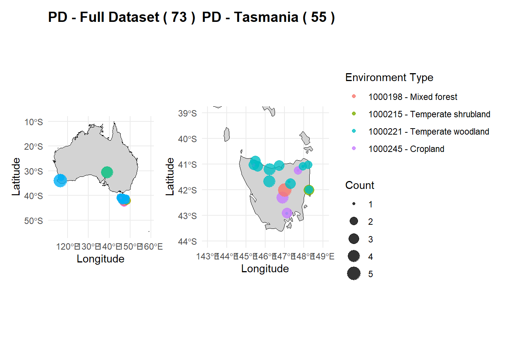
# Define extended boundary to include all possum data points
lat_min <- -45.0 # Slightly smaller than -42.93
lat_max <- -28.0 # Slightly larger than -30.65
lon_min <- 110.0 # Slightly smaller than 116.47
lon_max <- 150.0 # Slightly larger than 148.28
# Full dataset with all points (Tasmania & Australia border)
full_possums <- sample_metadata %>%
filter(latitude >= lat_min & latitude <= lat_max,
longitude >= lon_min & longitude <= lon_max)
# Filter for Tasmania only
tasmania_possums <- full_possums %>%
filter(latitude < -38 & latitude > -45, # Tasmania lat range
longitude > 140 & longitude < 150) # Tasmania lon range
# Aggregate possum count per location
full_possums_count <- full_possums %>%
group_by(latitude, longitude, local_environment) %>%
summarise(count = n(), .groups = "drop")
tasmania_possums_count <- tasmania_possums %>%
group_by(latitude, longitude, local_environment) %>%
summarise(count = n(), .groups = "drop")1.5 Plot Possum Locations
library(RColorBrewer)
# Get Tasmania data range to set zoom
lat_range <- range(tasmania_possums$latitude, na.rm = TRUE)
lon_range <- range(tasmania_possums$longitude, na.rm = TRUE)
# Count total possums
total_full <- sum(full_possums_count$count)
total_tasmania <- sum(tasmania_possums_count$count)
# Plot 1: Full Dataset (Including Border Data)
map_plot_full <- ggplot() +
geom_sf(data = australia_map, fill = "lightgray", color = "black") +
geom_point(data = full_possums_count, aes(x = longitude, y = latitude,
color = local_environment, size = count),
alpha = 0.8) +
scale_color_viridis_d(name = "Environment Type", option = "D") +
theme_minimal() +
labs(title = paste("PD - Full Dataset (", total_full, ")"),
x = "Longitude", y = "Latitude") +
theme(
plot.title = element_text(size = 10, face = "bold"),
legend.position = "none"
)
# Plot 2: Zoomed-in Tasmania
map_plot_zoomed <- ggplot() +
geom_sf(data = australia_map, fill = "lightgray", color = "black") +
geom_point(data = tasmania_possums_count, aes(x = longitude, y = latitude,
color = local_environment, size = count),
alpha = 0.8) +
coord_sf(xlim = c(143, 149), ylim = c(-44, -39)) +
scale_color_viridis_d(name = "Environment Type", option = "D") +
theme_minimal() +
labs(title = paste("PD - Tasmania (", total_tasmania, ")"),
x = "Longitude", y = "Latitude") +
theme(
plot.title = element_text(size = 10, face = "bold"),
axis.text.x = element_text(angle = 0, hjust = 0.5),
legend.position = "none"
)
# Combine the plots side by side
(map_plot_full + map_plot_zoomed) +
plot_layout(widths = c(1, 1.2))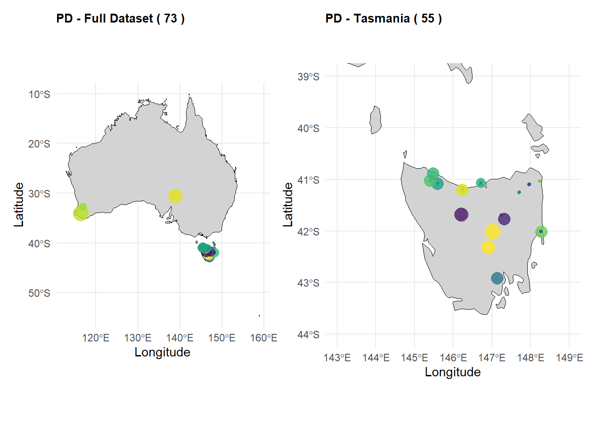
# Step 1: Create simplified/aggregated legend data
legend_data <- tasmania_possums_count %>%
group_by(local_environment) %>%
summarise(mean_count = mean(count, na.rm = TRUE)) %>%
filter(!is.na(local_environment)) %>%
arrange(desc(mean_count)) %>%
mutate(env_label = paste0(local_environment))
# Step 2: Plot custom "legend" with clean layout
custom_legend_plot <- ggplot(legend_data, aes(x = 1, y = reorder(env_label, mean_count),
color = env_label, size = mean_count)) +
geom_point(show.legend = FALSE) +
scale_size_continuous(range = c(3, 6)) + # tweak dot size scaling
scale_color_viridis_d(name = "Environment Type", option = "D") +
theme_minimal() +
theme(
axis.title = element_blank(),
axis.text.x = element_blank(),
axis.ticks.x = element_blank(),
panel.grid.major = element_blank(),
panel.grid.minor = element_blank(),
plot.margin = margin(10, 30, 10, 10),
axis.text.y = element_text(size = 9, hjust = 0)
)
# Show it
custom_legend_plot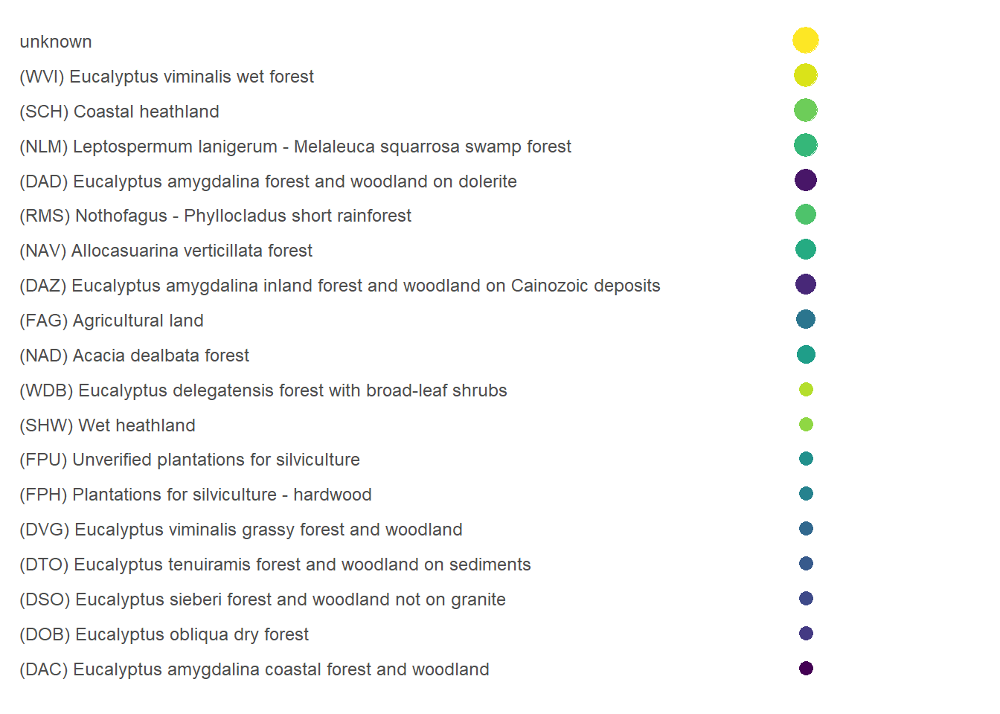
1.6 Sequencing reads statistics
sample_metadata %>%
summarise(Total=sum(reads_post_fastp * 150 / 1000000000) %>% round(2),
mean=mean(reads_post_fastp * 150 / 1000000000) %>% round(2),
sd=sd(reads_post_fastp * 150 / 1000000000) %>% round(2)) %>%
unite("Average",mean, sd, sep = " ± ", remove = TRUE) %>%
tt()| Total | Average |
|---|---|
| 354.78 | 4.86 ± 1.43 |
1.7 DNA fractions
sequence_fractions <- read_counts %>%
pivot_longer(-genome, names_to = "sample", values_to = "value") %>%
group_by(sample) %>%
summarise(mags = sum(value)) %>%
left_join(sample_metadata, by = join_by(sample == sample)) %>%
select(sample,mags,metagenomic_bases,host_bases,bases_lost_fastp_percent) %>%
mutate(mags_bases = mags*146) %>%
mutate(lowqual_bases = ((metagenomic_bases+host_bases)/(1-bases_lost_fastp_percent))-(metagenomic_bases+host_bases)) %>%
mutate(unmapped_bases = metagenomic_bases - mags_bases) %>%
mutate(unmapped_bases = ifelse(unmapped_bases < 0, 0, unmapped_bases)) %>%
select(sample, lowqual_bases, host_bases, unmapped_bases, mags_bases)
sequence_fractions %>%
mutate_at(vars(-sample), ~./1000000000) %>%
rename("Sample"=1, "Low quality"=2, "Mapped to host"=3, "Unmapped"=4, "Mapped to MAGs"=5) %>%
tt()| Sample | Low quality | Mapped to host | Unmapped | Mapped to MAGs |
|---|---|---|---|---|
| EHI01248 | 0.35511316 | 0.004968189 | 2.3488847 | 8.70559471 |
| EHI01253 | 0.15065275 | 0.007306842 | 0.7958509 | 3.15690325 |
| EHI01254 | 0.17713763 | 0.008641986 | 0.7698065 | 3.46426201 |
| EHI01256 | 0.25601713 | 0.011186636 | 1.6153318 | 4.62283158 |
| EHI01257 | 0.44278829 | 0.028219625 | 1.6424801 | 6.37891199 |
| EHI01258 | 0.18025206 | 0.021893733 | 0.9061351 | 3.11043101 |
| EHI01259 | 0.15785294 | 0.002551853 | 1.1230441 | 3.63491878 |
| EHI01264 | 0.10980388 | 0.194713827 | 0.8459937 | 1.94399131 |
| EHI01265 | 0.20096759 | 0.027838593 | 0.8781951 | 4.42282487 |
| EHI01266 | 0.16495605 | 0.004145198 | 1.0104139 | 3.02528367 |
| EHI01268 | 0.11654687 | 0.043538943 | 0.4199424 | 2.18818215 |
| EHI01270 | 0.15490780 | 0.006255568 | 0.7491831 | 1.85948097 |
| EHI01271 | 0.08546883 | 0.008773597 | 0.5176363 | 1.98955149 |
| EHI01272 | 0.12521297 | 0.004006385 | 0.6499615 | 2.73090343 |
| EHI01273 | 0.18374616 | 0.099650655 | 1.1683174 | 3.70517179 |
| EHI01339 | 0.21133261 | 0.082072269 | 1.0958456 | 4.01574329 |
| EHI01340 | 0.32934907 | 0.078517930 | 2.2365738 | 0.01091408 |
| EHI01341 | 0.26571726 | 0.023522716 | 1.3209604 | 3.21859599 |
| EHI01342 | 0.21296031 | 0.114741396 | 1.6557153 | 3.12134276 |
| EHI01343 | 0.18906343 | 0.112255644 | 1.1418032 | 3.97856774 |
| EHI01345 | 0.20874962 | 0.177845762 | 1.5032861 | 3.47998475 |
| EHI01387 | 0.23576644 | 4.644537522 | 0.4353141 | 1.57377576 |
| EHI01389 | 0.22833259 | 0.150555697 | 1.5157673 | 4.06490864 |
| EHI02064 | 0.36180367 | 0.073958684 | 1.7560470 | 3.13915797 |
| EHI02074 | 0.17452029 | 0.007193557 | 0.5946409 | 1.57287231 |
| EHI02082 | 0.39485375 | 0.094697133 | 1.6620324 | 4.43909934 |
| EHI02098 | 0.52162812 | 0.139932802 | 1.6241102 | 3.79457081 |
| EHI02760 | 0.27278081 | 0.117175084 | 0.5856983 | 2.76896198 |
| EHI02766 | 0.34206992 | 0.026262224 | 1.0131013 | 3.38893828 |
| EHI02767 | 0.39776392 | 0.027589923 | 1.4920663 | 4.50953237 |
| EHI02768 | 0.37285123 | 0.057921344 | 0.6534089 | 2.85662184 |
| EHI02769 | 0.23901114 | 0.015625837 | 0.5237186 | 1.80651100 |
| EHI02770 | 0.26006960 | 0.015636651 | 0.8099749 | 2.58298046 |
| EHI02771 | 0.43362442 | 0.078674560 | 0.8927819 | 3.75367475 |
| EHI02772 | 0.39350819 | 0.133333189 | 0.9955418 | 3.97147448 |
| EHI02773 | 0.47175703 | 0.004630464 | 1.2818831 | 4.30891829 |
| EHI02774 | 0.35219413 | 0.031638370 | 0.9683903 | 3.44730645 |
| EHI02775 | 0.31535990 | 0.006253892 | 1.2347646 | 3.06181082 |
| EHI02776 | 0.28106302 | 0.008270565 | 0.8075659 | 3.52331025 |
| EHI02779 | 0.34735466 | 0.029550201 | 0.7625330 | 2.52847910 |
| EHI02780 | 0.33353488 | 0.041239947 | 1.1610012 | 3.29078029 |
| EHI02784 | 0.31121206 | 0.019685481 | 0.8413476 | 3.58321420 |
| EHI02785 | 0.32741021 | 0.014638539 | 0.9515597 | 3.36888357 |
| EHI02789 | 0.42120190 | 0.170396074 | 1.0281381 | 4.40650732 |
| EHI02792 | 0.36123108 | 0.015462248 | 1.3463286 | 3.76356741 |
| EHI02796 | 1.07935523 | 0.004050961 | 1.0416445 | 4.15780523 |
| EHI02797 | 0.41305976 | 0.086506413 | 0.8415216 | 3.53097613 |
| EHI02801 | 0.52781243 | 0.036344570 | 0.8388848 | 2.91079981 |
| EHI02804 | 0.42394759 | 0.159371043 | 1.0649697 | 4.43245152 |
| EHI02806 | 0.44246621 | 0.089581175 | 1.7887921 | 4.03903963 |
| EHI02811 | 0.29358681 | 0.013750538 | 1.1729986 | 3.28550574 |
| EHI02812 | 0.36744061 | 0.057112125 | 0.8678336 | 4.12914616 |
| EHI02817 | 0.34058911 | 0.023035237 | 0.8059566 | 2.90095167 |
| EHI02819 | 0.23782849 | 0.002853452 | 2.0747359 | 1.56371986 |
| EHI02822 | 0.32932578 | 0.266269016 | 0.8566608 | 2.91142265 |
| EHI02823 | 0.46831299 | 0.319368041 | 0.9890243 | 4.23615481 |
| EHI02824 | 0.92746482 | 0.011070271 | 0.9754646 | 2.92498444 |
| EHI02826 | 0.44208850 | 0.043681080 | 0.9461530 | 4.12595664 |
| EHI02829 | 0.61719061 | 0.020333202 | 1.0838773 | 5.08522117 |
| EHI02830 | 0.63356691 | 1.608315016 | 0.8548023 | 3.32875927 |
| EHI02831 | 0.48579678 | 0.249927066 | 1.0747457 | 3.71679223 |
| EHI02832 | 0.55980508 | 0.002363983 | 1.1179965 | 3.46662093 |
| EHI02835 | 0.36642675 | 0.046904442 | 1.3031776 | 4.02345778 |
| EHI02836 | 0.73282342 | 0.011061548 | 0.7145331 | 2.22777765 |
| EHI02837 | 0.63165003 | 0.233233891 | 1.2696173 | 4.08635940 |
| EHI02838 | 0.71576136 | 0.008130997 | 1.6067697 | 4.58593636 |
| EHI02839 | 0.53704346 | 0.005429642 | 1.1846421 | 5.22051908 |
| EHI02840 | 0.40520960 | 0.170732154 | 0.9714674 | 4.15870634 |
| EHI02841 | 0.54078237 | 0.066720106 | 1.3402000 | 4.38657015 |
| EHI02843 | 0.51124373 | 0.025768852 | 1.0209520 | 3.79170293 |
| EHI02844 | 0.33724044 | 0.257831962 | 1.1673368 | 2.84963063 |
| EHI02845 | 0.41473841 | 0.000195490 | 0.5934703 | 2.25767567 |
| EHI02846 | 0.43528710 | 0.009803089 | 0.4380401 | 2.07829540 |
sequence_fractions %>%
mutate_at(vars(-sample), ~./1000000000) %>%
rename("Sample"=1, "Low quality"=2, "Mapped to host"=3, "Unmapped"=4, "Mapped to MAGs"=5) %>%
summarise(across(where(is.numeric), mean, na.rm = TRUE)) %>%
tt()| Low quality | Mapped to host | Unmapped | Mapped to MAGs |
|---|---|---|---|
| 0.3650321 | 0.1481815 | 1.08684 | 3.461414 |
sequence_fractions %>%
pivot_longer(!sample, names_to = "fraction", values_to = "value") %>%
mutate(value = value / 1000000000) %>%
mutate(fraction = factor(fraction, levels = c("lowqual_bases","host_bases","unmapped_bases","mags_bases"))) %>%
ggplot(., aes(x = sample, y = value, fill=fraction)) +
geom_bar(position="stack", stat = "identity") +
scale_fill_manual(name="Sequence type",
breaks=c("lowqual_bases","host_bases","unmapped_bases","mags_bases"),
labels=c("Low quality","Mapped to host","Unmapped","Mapped to MAGs"),
values=c("#CCCCCC", "#bcdee1", "#d8b8a3","#93655c"))+
labs(x = "Samples", y = "Amount of data (GB)") +
theme_classic() +
theme(axis.text.x = element_text(angle = 90, vjust = 0.5, hjust = 1, size=6),legend.position = "bottom")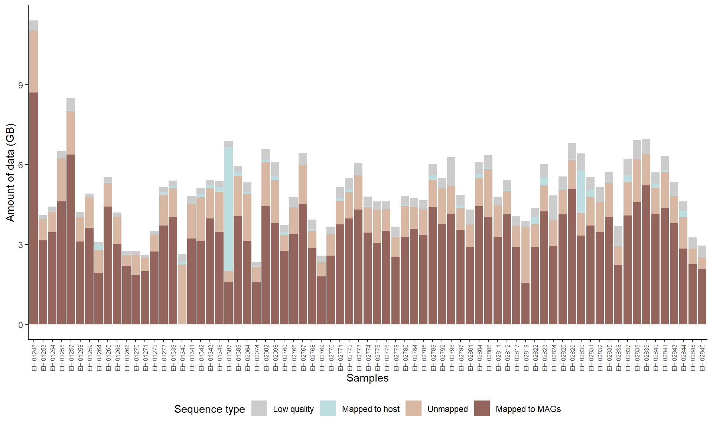
1.8 Recovered microbial fraction
singlem_table <- sequence_fractions %>%
mutate(mags_proportion = round((mags_bases / (mags_bases + unmapped_bases))*100,2)) %>%
left_join(sample_metadata, by = join_by(sample == sample)) %>%
mutate(singlem_proportion = round(singlem_fraction,2)) %>%
select(sample,mags_proportion,singlem_proportion) %>%
mutate(mags_proportion = ifelse(singlem_proportion == 0, 0, mags_proportion)) %>% #convert zeros to NA
mutate(singlem_proportion = ifelse(singlem_proportion == 0, NA, singlem_proportion)) %>% #convert zeros to NA
mutate(singlem_proportion = ifelse(singlem_proportion < mags_proportion, NA, singlem_proportion)) %>% #if singlem is smaller, then NA, to simplify plot
mutate(singlem_proportion = ifelse(singlem_proportion > 100, 100, singlem_proportion)) #simplify
singlem_table %>%
pivot_longer(!sample, names_to = "proportion", values_to = "value") %>%
mutate(proportion = factor(proportion, levels = c("mags_proportion","singlem_proportion"))) %>%
ggplot(., aes(x = value, y = sample, color=proportion)) +
geom_line(aes(group = sample), color = "#f8a538") +
geom_point() +
scale_color_manual(name="Proportion",
breaks=c("mags_proportion","singlem_proportion"),
labels=c("Recovered","Estimated"),
values=c("#52e1e8", "#876b53"))+
theme_classic() +
labs(y = "Samples", x = "Prokaryotic fraction (%)") +
theme(axis.text.x = element_text(angle = 90, vjust = 0.5, hjust = 1, size=6),legend.position = "right")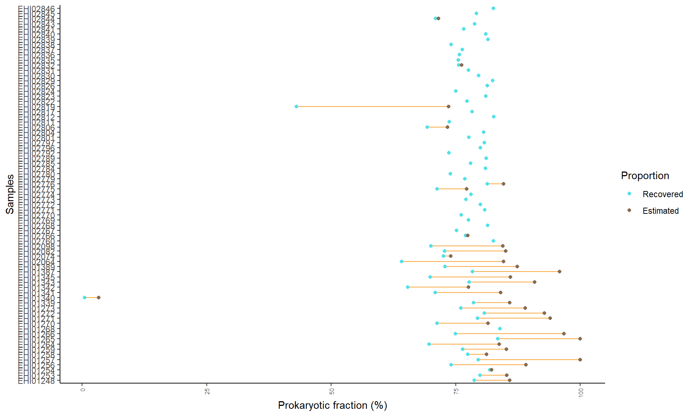
2 MAG catalogue
2.1 Gut microbiota
2.1.1 Genome phylogeny
# Generate the phylum color heatmap
phylum_heatmap <- read_tsv("https://raw.githubusercontent.com/earthhologenome/EHI_taxonomy_colour/main/ehi_phylum_colors.tsv") %>%
right_join(genome_metadata, by=join_by(phylum == phylum)) %>%
arrange(match(genome, genome_tree$tip.label)) %>%
select(genome,phylum) %>%
mutate(phylum = factor(phylum, levels = unique(phylum))) %>%
column_to_rownames(var = "genome")
# Generate new species table
newspecies_table <- genome_metadata %>%
mutate(newspecies=ifelse(species=="s__","Y","N")) %>%
select(genome,newspecies) %>%
column_to_rownames(var = "genome")
# Generate basal tree
circular_tree <- force.ultrametric(genome_tree, method="extend") %>% # extend to ultrametric for the sake of visualisation
ggtree(., layout="fan", open.angle=10, size=0.5)## ***************************************************************
## * Note: *
## * force.ultrametric does not include a formal method to *
## * ultrametricize a tree & should only be used to coerce *
## * a phylogeny that fails is.ultrametric due to rounding -- *
## * not as a substitute for formal rate-smoothing methods. *
## ***************************************************************# Add phylum ring
# circular_tree <- gheatmap(circular_tree, phylum_heatmap, offset=0.55, width=0.1, colnames=FALSE) +
# scale_fill_manual(values=phylum_colors) +
# geom_tiplab2(size=1, hjust=-0.1) +
# theme(legend.position = "none", plot.margin = margin(0, 0, 0, 0), panel.margin = margin(0, 0, 0, 0))
circular_tree <- gheatmap(circular_tree, phylum_heatmap, offset=0.05, width=0.05, colnames=FALSE) +
scale_fill_manual(values=phylum_colors) +
labs(fill="Phylum")
#theme(legend.position = "none", plot.margin = margin(0, 0, 0, 0), panel.margin = margin(0, 0, 0, 0))
# Flush color scale to enable a new color scheme in the next ring
circular_tree <- circular_tree + new_scale_fill()
# Add completeness ring
circular_tree <- circular_tree +
new_scale_fill() +
scale_fill_gradient(low = "#d1f4ba", high = "#f4baba") +
geom_fruit(
data=genome_metadata,
geom=geom_bar,
mapping = aes(x=completeness, y=genome, fill=contamination),
offset = 0.24,
pwidth = 0.1,
orientation="y",
stat="identity")+
labs(fill="Contamination")
# Add genome-size ring
circular_tree <- circular_tree + new_scale_fill()
circular_tree <- gheatmap(circular_tree, newspecies_table, offset=0.3, width=0.05, colnames=FALSE) +
scale_fill_manual(values=c("#f4f4f4","#74C8AE"))+
labs(fill="New species")
#theme(legend.position = "none", plot.margin = margin(0, 0, 0, 0), panel.margin = margin(0, 0, 0, 0))
circular_tree <- circular_tree +
geom_fruit(
data=genome_metadata,
geom=geom_bar,
mapping = aes(x=length, y=genome),
fill = "#1e6e55",
offset = 0.05,
orientation="y",
stat="identity")
# Add text
circular_tree <- circular_tree +
annotate('text', x=3.1, y=0, label=' Phylum', family='arial', size=3.5) +
annotate('text', x=3.7, y=0, label=' Genome quality', family='arial', size=3.5) +
annotate('text', x=4.1, y=0, label=' Genome size', family='arial', size=3.5) +
annotate('text', x=3.4, y=0, label=' New species', family='arial', size=3.5)
#Plot circular tree
circular_tree %>% open_tree(30) %>% rotate_tree(90)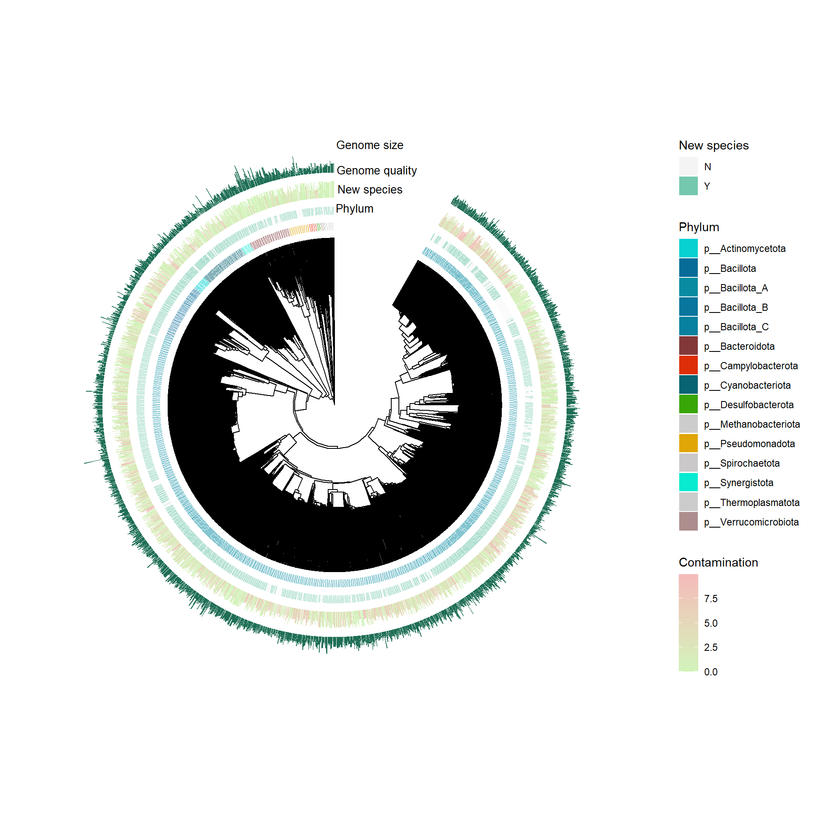
2.1.2 Taxonomy overview
tax_mag <-genome_metadata %>%
group_by(phylum) %>%
summarise(mag_n=n())
tax_mag %>%
mutate(percetage_mag=round(mag_n*100/sum(mag_n), 2)) %>%
arrange(-percetage_mag) %>%
tt()| phylum | mag_n | percetage_mag |
|---|---|---|
| p__Bacillota_A | 1440 | 79.25 |
| p__Bacillota | 94 | 5.17 |
| p__Cyanobacteriota | 82 | 4.51 |
| p__Bacteroidota | 71 | 3.91 |
| p__Pseudomonadota | 34 | 1.87 |
| p__Actinomycetota | 25 | 1.38 |
| p__Synergistota | 17 | 0.94 |
| p__Campylobacterota | 15 | 0.83 |
| p__Thermoplasmatota | 12 | 0.66 |
| p__Desulfobacterota | 8 | 0.44 |
| p__Bacillota_C | 7 | 0.39 |
| p__Verrucomicrobiota | 6 | 0.33 |
| p__Spirochaetota | 4 | 0.22 |
| p__Bacillota_B | 1 | 0.06 |
| p__Methanobacteriota | 1 | 0.06 |
2.1.3 Mag size (MB)
genome_metadata <-genome_metadata %>%
mutate(corrected_size=100*length/completeness) %>%
arrange(completeness)Mags average size (MB)
## # A tibble: 1 × 1
## Average_corrected_size
## <dbl>
## 1 2305214.2.1.4 Genome quality
genome_metadata %>%
summarise(completeness_mean=mean(completeness) %>% round(2) %>% as.character(),
completeness_sd=sd(completeness) %>% round(2) %>% as.character(),
contamination_mean=mean(contamination) %>% round(2),
contamination_sd=sd(contamination) %>% round(2)) %>%
unite("Completeness",completeness_mean, completeness_sd, sep = " ± ", remove = TRUE) %>%
unite("Contamination",contamination_mean, contamination_sd, sep = " ± ", remove = TRUE) %>%
tt()| Completeness | Contamination |
|---|---|
| 79.4 ± 16.77 | 2.79 ± 2.58 |
#Generate quality biplot
genome_biplot <- genome_metadata %>%
select(c(genome,domain,phylum,completeness,contamination,length)) %>%
arrange(match(genome, rev(genome_tree$tip.label))) %>% #sort MAGs according to phylogenetic tree
ggplot(aes(x=completeness,y=contamination,size=length,color=phylum)) +
geom_point(alpha=0.7) +
ylim(c(10,0)) +
scale_color_manual(values=phylum_colors) +
labs(y= "Contamination", x = "Completeness") +
theme_classic() +
theme(legend.position = "none")
#Generate contamination boxplot
genome_contamination <- genome_metadata %>%
ggplot(aes(y=contamination)) +
ylim(c(10,0)) +
geom_boxplot(colour = "#999999", fill="#cccccc") +
theme_void() +
theme(legend.position = "none",
axis.title.x = element_blank(),
axis.title.y = element_blank(),
axis.text.y=element_blank(),
axis.ticks.y=element_blank(),
axis.text.x=element_blank(),
axis.ticks.x=element_blank(),
plot.margin = unit(c(0, 0, 0.40, 0),"inches")) #add bottom-margin (top, right, bottom, left)
#Generate completeness boxplot
genome_completeness <- genome_metadata %>%
ggplot(aes(x=completeness)) +
xlim(c(50,100)) +
geom_boxplot(colour = "#999999", fill="#cccccc") +
theme_void() +
theme(legend.position = "none",
axis.title.x = element_blank(),
axis.title.y = element_blank(),
axis.text.y=element_blank(),
axis.ticks.y=element_blank(),
axis.text.x=element_blank(),
axis.ticks.x=element_blank(),
plot.margin = unit(c(0, 0, 0, 0.50),"inches")) #add left-margin (top, right, bottom, left)
#Render composite figure
grid.arrange(grobs = list(genome_completeness,genome_biplot,genome_contamination),
layout_matrix = rbind(c(1,1,1,1,1,1,1,1,1,1,1,4),
c(2,2,2,2,2,2,2,2,2,2,2,3),
c(2,2,2,2,2,2,2,2,2,2,2,3),
c(2,2,2,2,2,2,2,2,2,2,2,3),
c(2,2,2,2,2,2,2,2,2,2,2,3),
c(2,2,2,2,2,2,2,2,2,2,2,3),
c(2,2,2,2,2,2,2,2,2,2,2,3),
c(2,2,2,2,2,2,2,2,2,2,2,3),
c(2,2,2,2,2,2,2,2,2,2,2,3),
c(2,2,2,2,2,2,2,2,2,2,2,3),
c(2,2,2,2,2,2,2,2,2,2,2,3),
c(2,2,2,2,2,2,2,2,2,2,2,3)))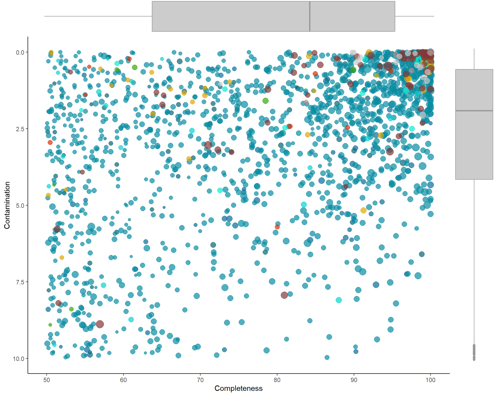
2.1.5 Functional overview
Predicted genes
genome_annotations <- read_tsv("data/genome_annotations.tsv.xz") %>%
rename(gene=1, genome=2, contig=3)
# Predicted genes
pred_genes <- genome_annotations %>%
nrow()
cat(pred_genes)## 1914029Number of annotated genes and percentages
# Some annotation
genome_annota <- genome_annotations %>%
filter(if_any(c(kegg_id, pfam_hits, cazy_hits), ~ !is.na(.))) %>%
nrow()
cat(genome_annota)
# Some annotation percentage
genome_annota*100/pred_genesNumber of KEGG annotatated genes and percentages
# KEGG annotation
kegg_annota <- genome_annotations %>%
filter(!is.na(kegg_id)) %>%
nrow()
cat(kegg_annota)
# KEGG annotation percentage
kegg_annota*100/genome_annota# Aggregate basal GIFT into elements
function_table <- genome_gifts %>%
to.elements(., GIFT_db)
# Generate basal tree
function_tree <- force.ultrametric(genome_tree, method="extend") %>%
ggtree(., size = 0.3)## ***************************************************************
## * Note: *
## * force.ultrametric does not include a formal method to *
## * ultrametricize a tree & should only be used to coerce *
## * a phylogeny that fails is.ultrametric due to rounding -- *
## * not as a substitute for formal rate-smoothing methods. *
## ***************************************************************#Add phylum colors next to the tree tips
function_tree <- gheatmap(function_tree, phylum_heatmap, offset=0, width=0.1, colnames=FALSE) +
scale_fill_manual(values=phylum_colors) +
labs(fill="Phylum")
#Reset fill scale to use a different colour profile in the heatmap
function_tree <- function_tree + new_scale_fill()
#Add functions heatmap
function_tree <- gheatmap(function_tree, function_table, offset=0.5, width=3.5, colnames=FALSE) +
vexpand(.08) +
coord_cartesian(clip = "off") +
scale_fill_gradient(low = "#f4f4f4", high = "steelblue", na.value="white") +
labs(fill="GIFT")
#Reset fill scale to use a different colour profile in the heatmap
function_tree <- function_tree + new_scale_fill()
# Add completeness barplots
function_tree <- function_tree +
geom_fruit(data=genome_metadata,
geom=geom_bar,
grid.params=list(axis="x", text.size=2, nbreak = 1),
axis.params=list(vline=TRUE),
mapping = aes(x=length, y=genome, fill=completeness),
offset = 3.8,
orientation="y",
stat="identity") +
scale_fill_gradient(low = "#cf8888", high = "#a2cc87") +
labs(fill="Genome\ncompleteness")
function_tree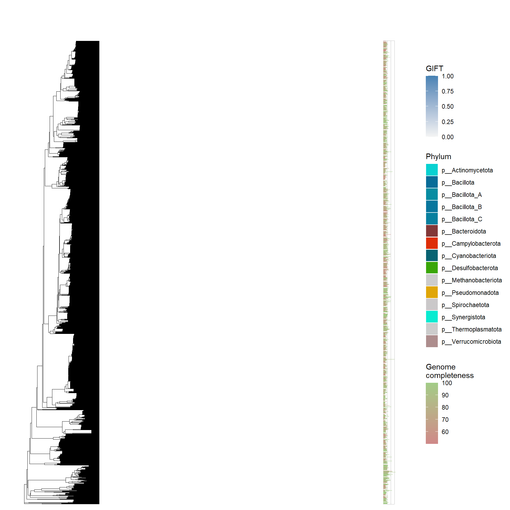
2.1.6 Functional ordination
# Generate the tSNE ordination
tSNE_function <- Rtsne(X=function_table, dims = 2, check_duplicates = FALSE)
# Plot the ordination
function_ordination <- tSNE_function$Y %>%
as.data.frame() %>%
mutate(genome=rownames(function_table)) %>%
inner_join(genome_metadata, by="genome") %>%
rename(tSNE1="V1", tSNE2="V2") %>%
select(genome,phylum,tSNE1,tSNE2, length) %>%
ggplot(aes(x = tSNE1, y = tSNE2, color = phylum, size=length))+
geom_point(shape=16, alpha=0.7) +
scale_color_manual(values=phylum_colors) +
theme_minimal() +
labs(color="Phylum", size="Genome size") +
guides(color = guide_legend(override.aes = list(size = 5))) # enlarge Phylum dots in legend
function_ordination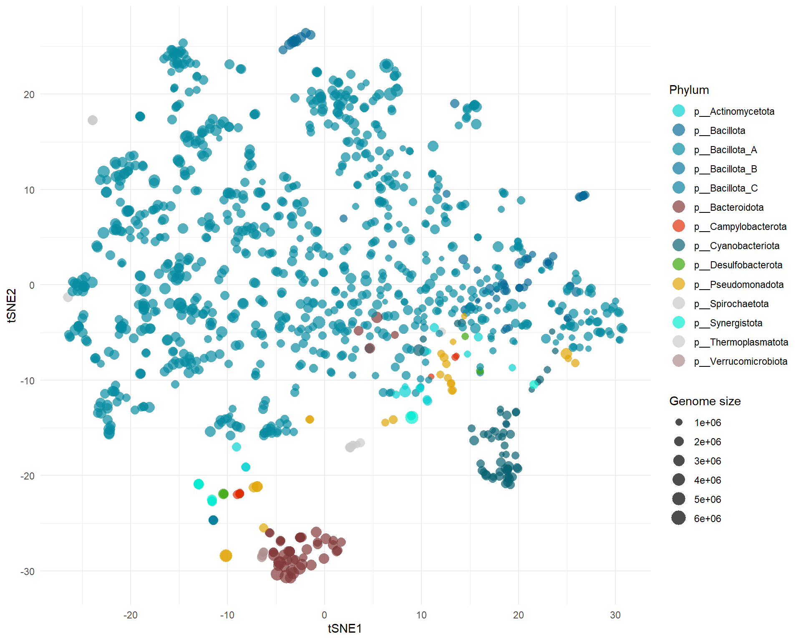
3 Community composition
3.1 Gut microbiota
3.1.1 Taxonomy overview
3.1.1.1 Phylum level
genome_counts_filt %>%
mutate_at(vars(-genome),~./sum(.)) %>% #apply TSS nornalisation
pivot_longer(-genome, names_to = "sample", values_to = "count") %>% #reduce to minimum number of columns
left_join(., genome_metadata, by = join_by(genome == genome)) %>% #append genome metadata
left_join(., sample_metadata, by = join_by(sample == sample)) %>% #append sample metadata
filter(count > 0) %>% #filter 0 counts
ggplot(., aes(x=sample,y=count, fill=phylum, group=phylum)) + #grouping enables keeping the same sorting of taxonomic units
geom_bar(stat="identity", colour="white", linewidth=0.1) + #plot stacked bars with white borders
scale_fill_manual(values=phylum_colors) +
guides(fill = guide_legend(ncol = 1)) +
theme(axis.text.x = element_blank(),
axis.ticks.x = element_blank(),
axis.title.x = element_blank(),
panel.background = element_blank(),
panel.border = element_blank(),
panel.grid.major = element_blank(),
panel.grid.minor = element_blank(),
strip.background = element_rect(fill = "white"),
strip.text = element_text(size = 12, lineheight = 0.6,face="bold"),
axis.line = element_line(linewidth = 0.5, linetype = "solid", colour = "black")) +
labs(fill="Phylum",y = "Relative abundance",x="Samples")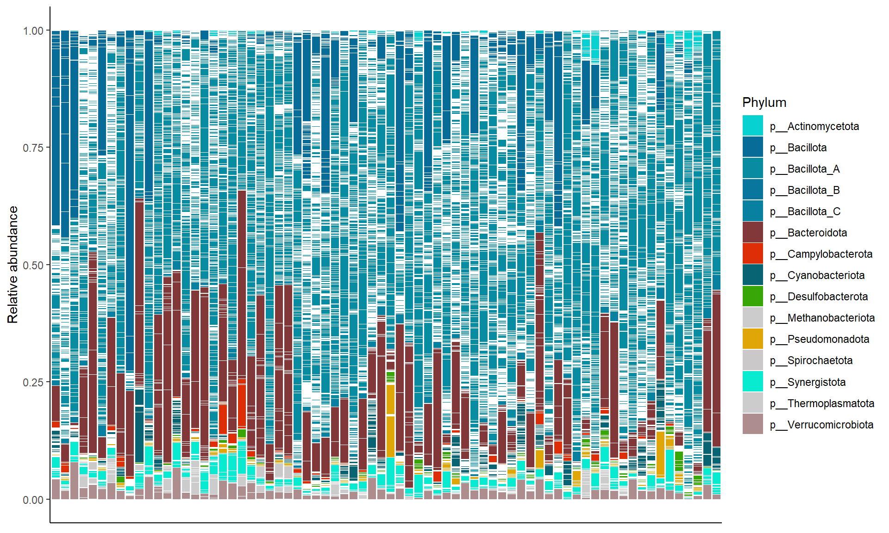
Number of MAGs
1817Number of bacteria phyla
13Number of Archaea phyla
2Phylum relative abundances
phylum_summary <- genome_counts_filt %>%
mutate_at(vars(-genome),~./sum(.)) %>%
pivot_longer(-genome, names_to = "sample", values_to = "count") %>%
left_join(sample_metadata, by = join_by(sample == sample)) %>%
left_join(genome_metadata, by = join_by(genome == genome)) %>%
group_by(sample,phylum,broad_environment, sex) %>%
summarise(relabun=sum(count))phylum_summary %>%
group_by(phylum) %>%
summarise(
total_mean = mean(relabun * 100, na.rm = TRUE),
total_sd = sd(relabun * 100, na.rm = TRUE)
) %>%
mutate(Total = str_c(round(total_mean, 3), "±", round(total_sd, 3))) %>%
arrange(-total_mean) %>%
dplyr::select(phylum, Total)## # A tibble: 15 × 2
## phylum Total
## <chr> <chr>
## 1 p__Bacillota_A 60.713±17.816
## 2 p__Bacteroidota 15.337±12.756
## 3 p__Bacillota 10.651±15.13
## 4 p__Synergistota 2.856±1.778
## 5 p__Cyanobacteriota 2.624±3.286
## 6 p__Verrucomicrobiota 2.074±1.467
## 7 p__Pseudomonadota 1.207±2.219
## 8 p__Bacillota_C 1.133±0.683
## 9 p__Thermoplasmatota 0.868±1.487
## 10 p__Campylobacterota 0.866±1.568
## 11 p__Actinomycetota 0.749±1.478
## 12 p__Desulfobacterota 0.681±0.697
## 13 p__Spirochaetota 0.189±0.607
## 14 p__Methanobacteriota 0.03±0.061
## 15 p__Bacillota_B 0.02±0.043phylum_arrange <- phylum_summary %>%
group_by(phylum) %>%
summarise(mean=sum(relabun)) %>%
arrange(-mean) %>%
select(phylum) %>%
pull()
phylum_summary %>%
left_join(genome_metadata %>% select(phylum,phylum) %>% unique(),by=join_by(phylum==phylum)) %>%
# left_join(sample_metadata,by=join_by(sample==sample)) %>%
filter(phylum %in% phylum_arrange[1:20]) %>%
mutate(phylum=factor(phylum,levels=rev(phylum_arrange[1:20]))) %>%
filter(relabun > 0) %>%
ggplot(aes(x=relabun, y=phylum, group=phylum, color=phylum)) +
scale_color_manual(values=phylum_colors[-8]) +
geom_jitter(alpha=0.5) +
theme_minimal() +
labs(y="phylum", x="Relative abundance", color="Phylum")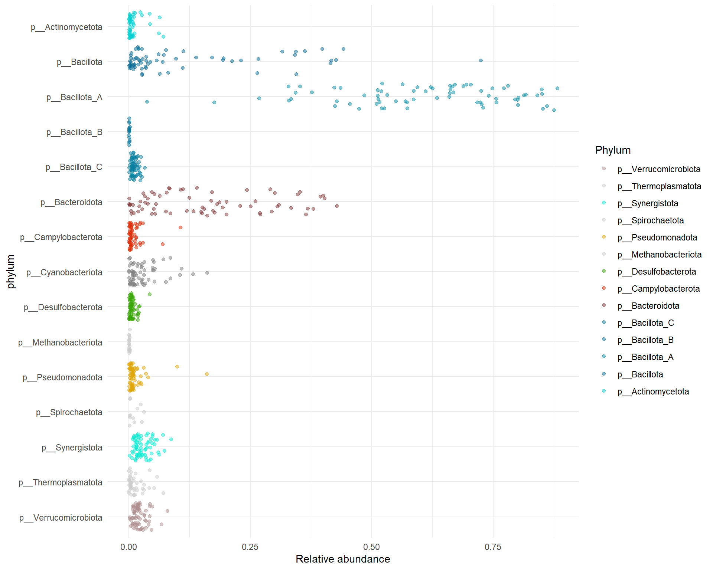 Bacteria phyla in individuals from females
1213Bacteria phyla in individuals from Temperate woodland
13Bacteria phyla in individuals from Xeric shrubland
13Bacteria phyla in individuals from mixed_forest
11Bacteria phyla in individuals from cropland
12phylum_summary %>%
group_by(phylum) %>%
summarise(
total_mean = mean(relabun * 100, na.rm = TRUE),
total_sd = sd(relabun * 100, na.rm = TRUE),
le_mean = mean(ifelse(broad_environment == "1000245 - Cropland", relabun * 100, NA), na.rm = TRUE),
le_sd = sd(ifelse(broad_environment == "1000245 - Cropland", relabun * 100, NA), na.rm = TRUE),
ha_mean = mean(ifelse(broad_environment == "1000198 - Mixed forest", relabun * 100, NA), na.rm = TRUE),
ha_sd = sd(ifelse(broad_environment == "1000198 - Mixed forest", relabun * 100, NA), na.rm = TRUE),
er_mean = mean(ifelse(broad_environment == "1000218 - Xeric shrubland", relabun * 100, NA), na.rm = TRUE),
er_sd = sd(ifelse(broad_environment == "1000218 - Xeric shrubland", relabun * 100, NA), na.rm = TRUE),
go_mean = mean(ifelse(broad_environment == "1000221 - Temperate woodland", relabun * 100, NA), na.rm = TRUE),
go_sd = sd(ifelse(broad_environment == "1000221 - Temperate woodland", relabun * 100, NA), na.rm = TRUE)
) %>%
mutate(
Total = str_c(round(total_mean, 3), "±", round(total_sd, 3)),
Cropland = str_c(round(le_mean, 3), "±", round(le_sd, 3)),
Mixed_forest = str_c(round(ha_mean, 3), "±", round(ha_sd, 3)),
Xeric_shrubland = str_c(round(er_mean, 3), "±", round(er_sd, 3)),
Temperate_woodland = str_c(round(go_mean, 3), "±", round(go_sd, 3))
) %>%
arrange(-total_mean) %>%
select(phylum, Total, Cropland, Temperate_woodland, Mixed_forest, Xeric_shrubland)## # A tibble: 15 × 6
## phylum Total Cropland Temperate_woodland Mixed_forest Xeric_shrubland
## <chr> <chr> <chr> <chr> <chr> <chr>
## 1 p__Bacillota_A 60.713±17.816 58.875±10.43 63.149±17.119 34.394±18.002 57.552±18.161
## 2 p__Bacteroidota 15.337±12.756 15.481±9.835 14.668±12.774 10.876±11.507 26.428±17.109
## 3 p__Bacillota 10.651±15.13 14.427±14.322 8.561±12.074 38.211±25.419 2.336±1.65
## 4 p__Synergistota 2.856±1.778 2.215±1.373 2.877±1.824 4.395±1.665 3.122±2.054
## 5 p__Cyanobacteriota 2.624±3.286 2.238±2.31 2.907±3.671 3.894±2.743 0.326±0.377
## 6 p__Verrucomicrobiota 2.074±1.467 1.534±0.894 1.998±1.116 4.934±2.723 2.134±0.872
## 7 p__Pseudomonadota 1.207±2.219 0.769±0.588 1.405±2.689 0.769±0.157 0.558±0.257
## 8 p__Bacillota_C 1.133±0.683 1.154±0.58 1.138±0.762 1.145±0.526 0.894±0.286
## 9 p__Thermoplasmatota 0.868±1.487 1.874±2.445 0.475±1.01 0.209±0.204 2.817±0.979
## 10 p__Campylobacterota 0.866±1.568 0.776±0.657 0.746±1.234 0.611±0.499 2.261±4.129
## 11 p__Actinomycetota 0.749±1.478 0.108±0.227 1.036±1.75 0.286±0.281 0.278±0.522
## 12 p__Desulfobacterota 0.681±0.697 0.483±0.586 0.773±0.768 0.275±0.289 0.653±0.615
## 13 p__Spirochaetota 0.189±0.607 0±0 0.211±0.697 0±0 0.62±0.635
## 14 p__Methanobacteriota 0.03±0.061 0.036±0.046 0.037±0.071 0±0 0±0
## 15 p__Bacillota_B 0.02±0.043 0.032±0.045 0.017±0.045 0±0 0.022±0.028phylum_summary %>%
group_by(phylum) %>%
summarise(
total_mean = mean(relabun * 100, na.rm = TRUE),
total_sd = sd(relabun * 100, na.rm = TRUE),
le_mean = mean(ifelse(sex == "Female", relabun * 100, NA), na.rm = TRUE),
le_sd = sd(ifelse(sex == "Female", relabun * 100, NA), na.rm = TRUE),
ha_mean = mean(ifelse( sex== "Male", relabun * 100, NA), na.rm = TRUE),
ha_sd = sd(ifelse(sex == "Male", relabun * 100, NA), na.rm = TRUE)
) %>%
mutate(
Total = str_c(round(total_mean, 3), "±", round(total_sd, 3)),
Female = str_c(round(le_mean, 3), "±", round(le_sd, 3)),
Male = str_c(round(ha_mean, 3), "±", round(ha_sd, 3))
) %>%
arrange(-total_mean) %>%
select(phylum, Total, Female, Male)## # A tibble: 15 × 4
## phylum Total Female Male
## <chr> <chr> <chr> <chr>
## 1 p__Bacillota_A 60.713±17.816 59.012±21.422 63.183±14.871
## 2 p__Bacteroidota 15.337±12.756 14.648±11.721 13.48±11.248
## 3 p__Bacillota 10.651±15.13 12.942±17.914 10.184±13.886
## 4 p__Synergistota 2.856±1.778 2.967±1.775 2.65±1.655
## 5 p__Cyanobacteriota 2.624±3.286 2.659±3.026 2.965±3.089
## 6 p__Verrucomicrobiota 2.074±1.467 2.067±1.288 2.274±1.798
## 7 p__Pseudomonadota 1.207±2.219 1.234±1.949 0.951±0.784
## 8 p__Bacillota_C 1.133±0.683 1.37±0.897 1.025±0.503
## 9 p__Thermoplasmatota 0.868±1.487 0.766±1.708 0.723±1.287
## 10 p__Campylobacterota 0.866±1.568 0.53±0.754 0.991±1.341
## 11 p__Actinomycetota 0.749±1.478 1.128±2.008 0.609±1.113
## 12 p__Desulfobacterota 0.681±0.697 0.615±0.587 0.652±0.486
## 13 p__Spirochaetota 0.189±0.607 0±0 0.277±0.83
## 14 p__Methanobacteriota 0.03±0.061 0.044±0.069 0.013±0.025
## 15 p__Bacillota_B 0.02±0.043 0.018±0.041 0.023±0.053.1.1.2 Family level
Percentange of families in each group of environment
family_summary <- genome_counts_filt %>%
mutate_at(vars(-genome),~./sum(.)) %>% #apply TSS nornalisation
pivot_longer(-genome, names_to = "sample", values_to = "count") %>% #reduce to minimum number of columns
left_join(sample_metadata, by = join_by(sample == sample)) %>% #append sample metadata
left_join(genome_metadata, by = join_by(genome == genome)) %>% #append genome metadata
group_by(sample,family, broad_environment, sex) %>%
summarise(relabun=sum(count))family_summary %>%
group_by(family) %>%
summarise(
total_mean = mean(relabun * 100, na.rm = TRUE),
total_sd = sd(relabun * 100, na.rm = TRUE),
le_mean = mean(ifelse(broad_environment == "1000245 - Cropland", relabun * 100, NA), na.rm = TRUE),
le_sd = sd(ifelse(broad_environment == "1000245 - Cropland", relabun * 100, NA), na.rm = TRUE),
ha_mean = mean(ifelse(broad_environment == "1000198 - Mixed forest", relabun * 100, NA), na.rm = TRUE),
ha_sd = sd(ifelse(broad_environment == "1000198 - Mixed forest", relabun * 100, NA), na.rm = TRUE),
er_mean = mean(ifelse(broad_environment == "1000218 - Xeric shrubland", relabun * 100, NA), na.rm = TRUE),
er_sd = sd(ifelse(broad_environment == "1000218 - Xeric shrubland", relabun * 100, NA), na.rm = TRUE),
go_mean = mean(ifelse(broad_environment == "1000221 - Temperate woodland", relabun * 100, NA), na.rm = TRUE),
go_sd = sd(ifelse(broad_environment == "1000221 - Temperate woodland", relabun * 100, NA), na.rm = TRUE)
) %>%
mutate(
Total = str_c(round(total_mean, 3), "±", round(total_sd, 3)),
Cropland = str_c(round(le_mean, 3), "±", round(le_sd, 3)),
Mixed_forest = str_c(round(ha_mean, 3), "±", round(ha_sd, 3)),
Xeric_shrubland = str_c(round(er_mean, 3), "±", round(er_sd, 3)),
Temperate_woodland = str_c(round(go_mean, 3), "±", round(go_sd, 3))
) %>%
dplyr::select(family,Total,Cropland, Temperate_woodland, Mixed_forest, Xeric_shrubland)## # A tibble: 52 × 6
## family Total Cropland Temperate_woodland Mixed_forest Xeric_shrubland
## <chr> <chr> <chr> <chr> <chr> <chr>
## 1 f__ 0.022±0.064 0.002±0.008 0.033±0.077 0.006±0.014 0±0
## 2 f__Acidaminococcaceae 1.116±0.658 1.154±0.58 1.112±0.727 1.145±0.526 0.894±0.286
## 3 f__Acutalibacteraceae 0.437±0.449 0.308±0.215 0.501±0.512 0.204±0.372 0.449±0.299
## 4 f__Akkermansiaceae 1.932±1.499 1.534±0.894 1.887±1.118 4.934±2.723 1.301±1.184
## 5 f__Anaerotignaceae 0.044±0.043 0.044±0.041 0.042±0.041 0.005±0.011 0.074±0.067
## 6 f__Anaerovoracaceae 0.022±0.05 0.009±0.02 0.02±0.042 0.112±0.11 0±0
## 7 f__Bacteroidaceae 10.696±11.055 9.816±5.594 9.817±11.399 9.473±10.239 22.416±13.948
## 8 f__Borkfalkiaceae 7.439±5.295 11.275±5.806 7.088±5.26 3.208±2.553 5.841±3.717
## 9 f__Burkholderiaceae 0.052±0.102 0.039±0.059 0.042±0.095 0.038±0.056 0.174±0.184
## 10 f__Burkholderiaceae_A 0.577±0.56 0.523±0.471 0.58±0.637 0.699±0.226 0.383±0.242
## # ℹ 42 more rowsfamily_arrange <- family_summary %>%
group_by(family) %>%
summarise(mean=sum(relabun)) %>%
arrange(-mean) %>%
select(family) %>%
pull()
# Per environment
family_summary %>%
left_join(genome_metadata %>% select(family,phylum) %>% unique(),by=join_by(family==family)) %>%
filter(family %in% family_arrange[1:20]) %>%
mutate(family=factor(family,levels=rev(family_arrange[1:20]))) %>%
filter(relabun > 0) %>%
ggplot(aes(x=relabun, y=family, group=family, color=phylum)) +
scale_color_manual(values=phylum_colors[-8]) +
geom_jitter(alpha=0.5) +
facet_grid(.~broad_environment)+
theme_minimal() +
labs(y="Family", x="Relative abundance", color="Phylum")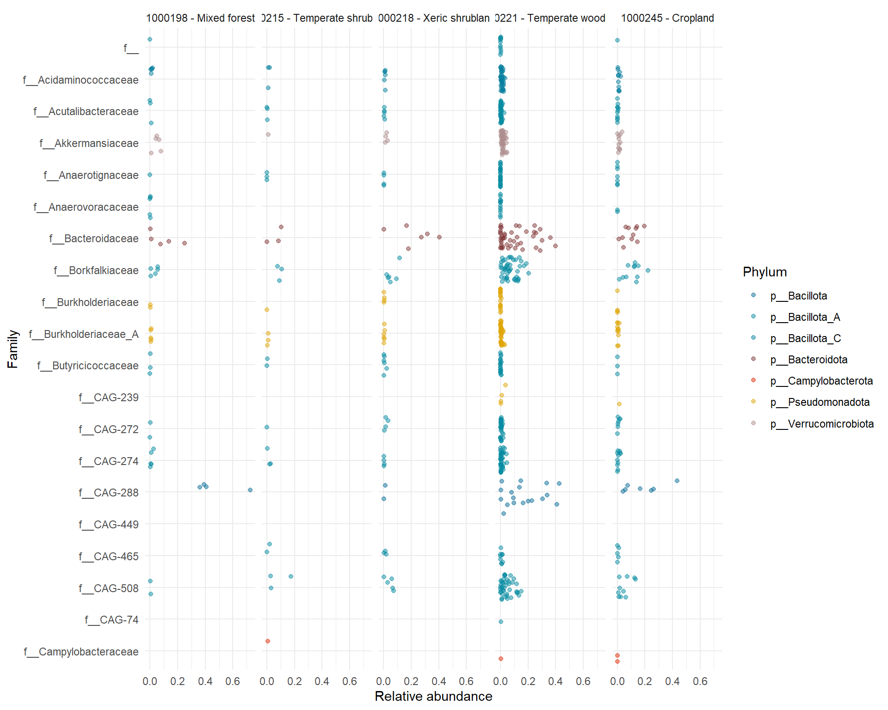
family_summary %>%
group_by(family) %>%
summarise(total_mean=mean(relabun*100, na.rm=T),
total_sd=sd(relabun*100, na.rm=T),
le_mean=mean(relabun[broad_environment=="1000245 - Cropland"]*100, na.rm=T),
le_sd=sd(relabun[broad_environment=="1000245 - Cropland"]*100, na.rm=T),
ha_mean=mean(relabun[broad_environment=="1000198 - Mixed forest"]*100, na.rm=T),
ha_sd=sd(relabun[broad_environment=="1000198 - Mixed forest"]*100, na.rm=T),
er_mean=mean(relabun[broad_environment=="1000218 - Xeric shrubland"]*100, na.rm=T),
er_sd=sd(relabun[broad_environment=="1000218 - Xeric shrubland"]*100, na.rm=T),
go_mean=mean(relabun[broad_environment=="1000221 - Temperate woodland"]*100, na.rm=T),
go_sd=sd(relabun[broad_environment=="1000221 - Temperate woodland"]*100, na.rm=T)) %>%
mutate(Total=str_c(round(total_mean,3),"±",round(total_sd,3)),
Cropland=str_c(round(le_mean,3),"±",round(le_sd,3)),
Mixed_forest=str_c(round(ha_mean,3),"±",round(ha_sd,3)),
Xeric_shrubland=str_c(round(er_mean,3),"±",round(er_sd,3)),
Temperate_woodland=str_c(round(go_mean,3),"±",round(go_sd,3))) %>%
arrange(-total_mean) %>%
dplyr::select(family,Total,Cropland,Temperate_woodland, Mixed_forest,Xeric_shrubland)## # A tibble: 52 × 6
## family Total Cropland Temperate_woodland Mixed_forest Xeric_shrubland
## <chr> <chr> <chr> <chr> <chr> <chr>
## 1 f__Lachnospiraceae 28.205±9.998 25.865±6.414 29.657±10.487 22.929±12.444 22.276±6.399
## 2 f__Oscillospiraceae 11.223±8.158 6.852±2.912 12.307±8.693 4.256±3.422 17.81±7.479
## 3 f__Bacteroidaceae 10.696±11.055 9.816±5.594 9.817±11.399 9.473±10.239 22.416±13.948
## 4 f__CAG-288 8.635±15.251 11.701±14.385 6.449±11.978 37.695±25.73 0.245±0.538
## 5 f__Borkfalkiaceae 7.439±5.295 11.275±5.806 7.088±5.26 3.208±2.553 5.841±3.717
## 6 f__Ruminococcaceae 5.429±4.762 6.017±5.302 5.389±4.49 1.722±1.147 3.322±2.259
## 7 f__CAG-508 4.042±4.359 4.664±4.633 4.107±4.212 0.146±0.267 3.826±3.273
## 8 f__Dethiosulfovibrionaceae 2.454±1.626 2.049±1.294 2.405±1.661 3.993±1.662 2.626±1.872
## 9 f__Muribaculaceae 2.053±4.249 2.813±5.308 2.341±4.499 0.386±0.863 0±0
## 10 f__UBA932 1.966±3.772 2.294±3.61 1.763±3.655 0.915±2.046 3.7±6.208
## # ℹ 42 more rowsFamily summary grouped by sex
family_summary %>%
group_by(family) %>%
summarise(
total_mean = mean(relabun * 100, na.rm = TRUE),
total_sd = sd(relabun * 100, na.rm = TRUE),
le_mean = mean(ifelse(sex == "Female", relabun * 100, NA), na.rm = TRUE),
le_sd = sd(ifelse(sex == "Female", relabun * 100, NA), na.rm = TRUE),
ha_mean = mean(ifelse( sex== "Male", relabun * 100, NA), na.rm = TRUE),
ha_sd = sd(ifelse(sex == "Male", relabun * 100, NA), na.rm = TRUE)
) %>%
mutate(
Total = str_c(round(total_mean, 3), "±", round(total_sd, 3)),
Female = str_c(round(le_mean, 3), "±", round(le_sd, 3)),
Male = str_c(round(ha_mean, 3), "±", round(ha_sd, 3))
) %>%
arrange(-total_mean) %>%
select(family, Total, Female, Male)## # A tibble: 52 × 4
## family Total Female Male
## <chr> <chr> <chr> <chr>
## 1 f__Lachnospiraceae 28.205±9.998 29.818±13.448 28.926±7.093
## 2 f__Oscillospiraceae 11.223±8.158 8.451±7.695 11.752±6.237
## 3 f__Bacteroidaceae 10.696±11.055 9.231±9.11 9.336±9.589
## 4 f__CAG-288 8.635±15.251 11.469±18.156 7.94±13.683
## 5 f__Borkfalkiaceae 7.439±5.295 7.529±6.085 7.343±4.351
## 6 f__Ruminococcaceae 5.429±4.762 5.14±3.989 6.359±5.72
## 7 f__CAG-508 4.042±4.359 3.495±4.278 4.605±4.655
## 8 f__Dethiosulfovibrionaceae 2.454±1.626 2.599±1.648 2.294±1.494
## 9 f__Muribaculaceae 2.053±4.249 2.968±5.555 1.326±2.19
## 10 f__UBA932 1.966±3.772 1.695±3.403 2.367±3.922
## # ℹ 42 more rowsfamily_arrange <- family_summary %>%
group_by(family) %>%
summarise(mean=sum(relabun)) %>%
arrange(-mean) %>%
select(family) %>%
pull()
# Per environment
family_summary %>%
left_join(genome_metadata %>% select(family,phylum) %>% unique(),by=join_by(family==family)) %>%
filter(family %in% family_arrange[1:20]) %>%
mutate(family=factor(family,levels=rev(family_arrange[1:20]))) %>%
filter(relabun > 0) %>%
ggplot(aes(x=relabun, y=family, group=family, color=phylum)) +
scale_color_manual(values=phylum_colors[-8]) +
geom_jitter(alpha=0.5) +
facet_grid(.~sex)+
theme_minimal() +
labs(y="Family", x="Relative abundance", color="Phylum")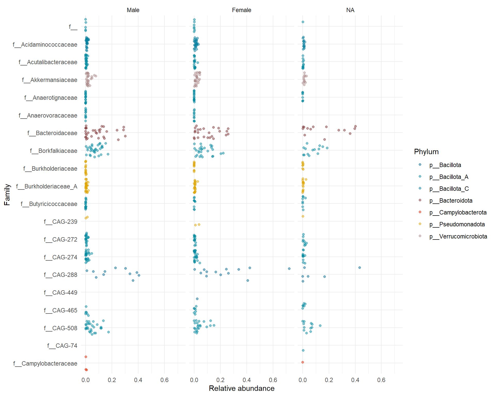
family_summary %>%
group_by(family) %>%
summarise(
total_mean = mean(relabun * 100, na.rm = TRUE),
total_sd = sd(relabun * 100, na.rm = TRUE),
le_mean = mean(ifelse(sex == "Female", relabun * 100, NA), na.rm = TRUE),
le_sd = sd(ifelse(sex == "Female", relabun * 100, NA), na.rm = TRUE),
ha_mean = mean(ifelse( sex== "Male", relabun * 100, NA), na.rm = TRUE),
ha_sd = sd(ifelse(sex == "Male", relabun * 100, NA), na.rm = TRUE)
) %>%
mutate(
Total = str_c(round(total_mean, 3), "±", round(total_sd, 3)),
Female = str_c(round(le_mean, 3), "±", round(le_sd, 3)),
Male = str_c(round(ha_mean, 3), "±", round(ha_sd, 3))
) %>%
arrange(-total_mean) %>%
dplyr::select(family,Total,Female, Male)## # A tibble: 52 × 4
## family Total Female Male
## <chr> <chr> <chr> <chr>
## 1 f__Lachnospiraceae 28.205±9.998 29.818±13.448 28.926±7.093
## 2 f__Oscillospiraceae 11.223±8.158 8.451±7.695 11.752±6.237
## 3 f__Bacteroidaceae 10.696±11.055 9.231±9.11 9.336±9.589
## 4 f__CAG-288 8.635±15.251 11.469±18.156 7.94±13.683
## 5 f__Borkfalkiaceae 7.439±5.295 7.529±6.085 7.343±4.351
## 6 f__Ruminococcaceae 5.429±4.762 5.14±3.989 6.359±5.72
## 7 f__CAG-508 4.042±4.359 3.495±4.278 4.605±4.655
## 8 f__Dethiosulfovibrionaceae 2.454±1.626 2.599±1.648 2.294±1.494
## 9 f__Muribaculaceae 2.053±4.249 2.968±5.555 1.326±2.19
## 10 f__UBA932 1.966±3.772 1.695±3.403 2.367±3.922
## # ℹ 42 more rows3.1.1.3 Genus level
*** Percetange of genera in each group of environment***
genus_summary <- genome_counts_filt %>%
mutate_at(vars(-genome),~./sum(.)) %>% #apply TSS nornalisation
pivot_longer(-genome, names_to = "sample", values_to = "count") %>% #reduce to minimum number of columns
left_join(sample_metadata, by = join_by(sample == sample)) %>% #append sample metadata
left_join(genome_metadata, by = join_by(genome == genome)) %>% #append genome metadata
group_by(sample,phylum,genus,broad_environment) %>%
summarise(relabun=sum(count))
# %>%
# filter(genus != "g__") %>%
# mutate(genus= sub("^g__", "", genus))
genus_summary %>%
group_by(genus) %>%
summarise(total_mean=mean(relabun*100, na.rm=T),
total_sd=sd(relabun*100, na.rm=T),
le_mean=mean(relabun[broad_environment=="1000245 - Cropland"]*100, na.rm=T),
le_sd=sd(relabun[broad_environment=="1000245 - Cropland"]*100, na.rm=T),
ha_mean=mean(relabun[broad_environment=="1000198 - Mixed forest"]*100, na.rm=T),
ha_sd=sd(relabun[broad_environment=="1000198 - Mixed forest"]*100, na.rm=T),
er_mean=mean(relabun[broad_environment=="1000218 - Xeric shrubland"]*100, na.rm=T),
er_sd=sd(relabun[broad_environment=="1000218 - Xeric shrubland"]*100, na.rm=T),
go_mean=mean(relabun[broad_environment=="1000221 - Temperate woodland"]*100, na.rm=T),
go_sd=sd(relabun[broad_environment=="1000221 - Temperate woodland"]*100, na.rm=T)) %>%
mutate(Total=str_c(round(total_mean,3),"±",round(total_sd,3)),
Cropland=str_c(round(le_mean,3),"±",round(le_sd,3)),
Mixed_forest=str_c(round(ha_mean,3),"±",round(ha_sd,3)),
Xeric_shrubland=str_c(round(er_mean,3),"±",round(er_sd,3)),
Temperate_woodland=str_c(round(go_mean,3),"±",round(go_sd,3))) %>%
arrange(-total_mean) %>%
dplyr::select(genus,Total, Cropland,Temperate_woodland, Mixed_forest,Xeric_shrubland) ## # A tibble: 173 × 6
## genus Total Cropland Temperate_woodland Mixed_forest Xeric_shrubland
## <chr> <chr> <chr> <chr> <chr> <chr>
## 1 g__Prevotella 9.081±10.534 9.381±5.844 8.141±10.756 4.235±6.183 21.397±13.482
## 2 g__Enterosoma 8.635±15.251 11.701±14.385 6.449±11.978 37.695±25.73 0.245±0.538
## 3 g__Coproplasma 6.807±5.002 10.681±5.315 6.328±4.94 3.196±2.54 5.313±3.765
## 4 g__RGIG6307 5.319±4.84 4.127±2.083 5.707±5.151 0.477±0.289 6.745±2.756
## 5 g__Onthomonas 4.353±3.228 3.628±2.036 4.237±3.041 2.906±2.533 7.746±5.474
## 6 g__Ventrimonas 4.342±5.43 3.449±4.552 4.925±6.094 5.197±3.825 0.795±0.458
## 7 g__Eubacterium_I 3.269±2.549 2.489±3.267 3.597±2.571 2.763±2.006 2.887±1.925
## 8 g__Choladousia 2.622±1.668 2.029±0.97 2.638±1.7 1.956±1.192 2.869±1.766
## 9 g__Faeciplasma 2.6±3.197 3.158±4.909 2.748±3.049 1.153±0.718 0.746±1.353
## 10 g__Agathobacter 2.501±2.807 1.917±2.231 2.575±3.063 2.888±1.871 1.333±1.002
## # ℹ 163 more rowsgenus_summary_sort <- genus_summary %>%
group_by(genus) %>%
summarise(mean=mean(relabun, na.rm=T),sd=sd(relabun, na.rm=T)) %>%
arrange(-mean)
genus_summary %>%
mutate(genus=factor(genus, levels=rev(genus_summary_sort %>% pull(genus)))) %>%
filter(relabun > 0) %>%
ggplot(aes(x=relabun, y=genus, group=genus, color=phylum)) +
scale_color_manual(values=phylum_colors) +
geom_jitter(alpha=0.5) +
facet_grid(.~broad_environment)+
theme_minimal() +
theme(axis.text.y = element_text(size=6))+
labs(y="Family", x="Relative abundance", color="Phylum")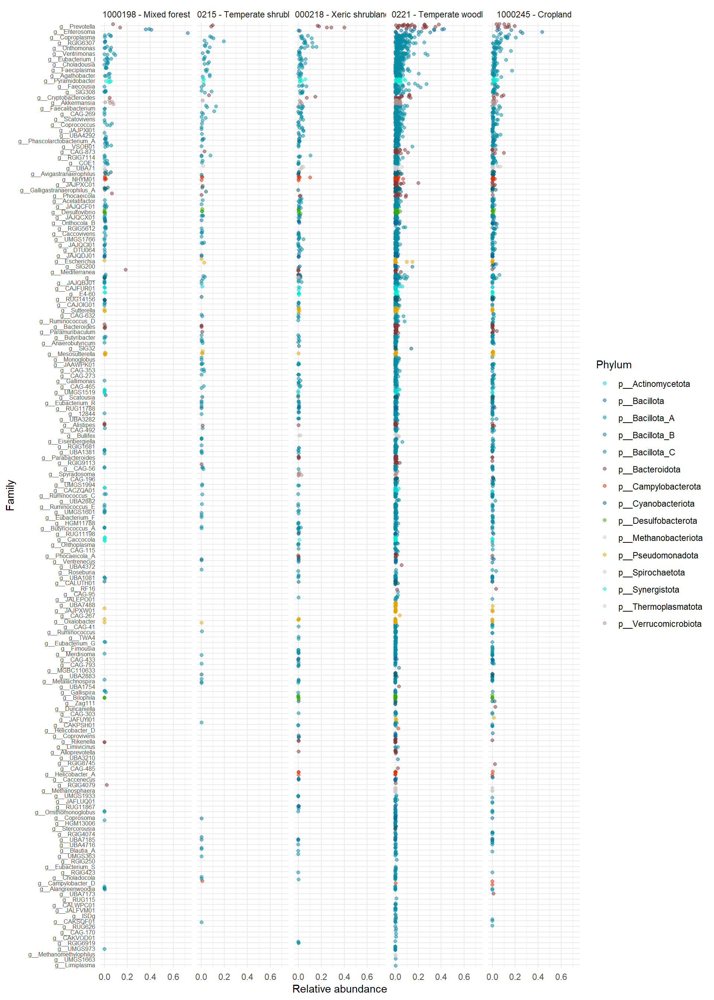 *** Percetange of genera in each group of sex***
genus_summary <- genome_counts_filt %>%
mutate_at(vars(-genome),~./sum(.)) %>% #apply TSS nornalisation
pivot_longer(-genome, names_to = "sample", values_to = "count") %>% #reduce to minimum number of columns
left_join(sample_metadata, by = join_by(sample == sample)) %>% #append sample metadata
left_join(genome_metadata, by = join_by(genome == genome)) %>% #append genome metadata
group_by(sample,phylum,genus,sex) %>%
summarise(relabun=sum(count))
# %>%
# filter(genus != "g__") %>%
# mutate(genus= sub("^g__", "", genus))
genus_summary %>%
group_by(genus) %>%
summarise(total_mean=mean(relabun*100, na.rm=T),
total_sd=sd(relabun*100, na.rm=T),
le_mean=mean(relabun[sex=="Female"]*100, na.rm=T),
le_sd=sd(relabun[sex=="Female"]*100, na.rm=T),
ha_mean=mean(relabun[sex=="Male"]*100, na.rm=T),
ha_sd=sd(relabun[sex=="Male"]*100, na.rm=T)) %>%
mutate(Total=str_c(round(total_mean,3),"±",round(total_sd,3)),
Female=str_c(round(le_mean,3),"±",round(le_sd,3)),
Male=str_c(round(ha_mean,3),"±",round(ha_sd,3))) %>%
arrange(-total_mean) %>%
dplyr::select(genus,Total,Male,Female) ## # A tibble: 173 × 4
## genus Total Male Female
## <chr> <chr> <chr> <chr>
## 1 g__Prevotella 9.081±10.534 6.761±8.201 8.435±8.906
## 2 g__Enterosoma 8.635±15.251 7.94±13.683 11.469±18.156
## 3 g__Coproplasma 6.807±5.002 6.852±4.084 6.752±5.903
## 4 g__RGIG6307 5.319±4.84 6.178±5.285 4.467±5.172
## 5 g__Onthomonas 4.353±3.228 5.021±2.992 3.351±2.586
## 6 g__Ventrimonas 4.342±5.43 3.935±3.668 6.022±7.312
## 7 g__Eubacterium_I 3.269±2.549 3.336±1.804 3.328±2.91
## 8 g__Choladousia 2.622±1.668 3.109±1.545 2.266±1.754
## 9 g__Faeciplasma 2.6±3.197 3.338±3.991 2.463±2.538
## 10 g__Agathobacter 2.501±2.807 2.548±1.862 2.905±3.867
## # ℹ 163 more rowsgenus_summary_sort <- genus_summary %>%
group_by(genus) %>%
summarise(mean=mean(relabun, na.rm=T),sd=sd(relabun, na.rm=T)) %>%
arrange(-mean)
genus_summary %>%
mutate(genus=factor(genus, levels=rev(genus_summary_sort %>% pull(genus)))) %>%
filter(relabun > 0) %>%
ggplot(aes(x=relabun, y=genus, group=genus, color=phylum)) +
scale_color_manual(values=phylum_colors) +
geom_jitter(alpha=0.5) +
facet_grid(.~sex)+
theme_minimal() +
theme(axis.text.y = element_text(size=6))+
labs(y="Family", x="Relative abundance", color="Phylum")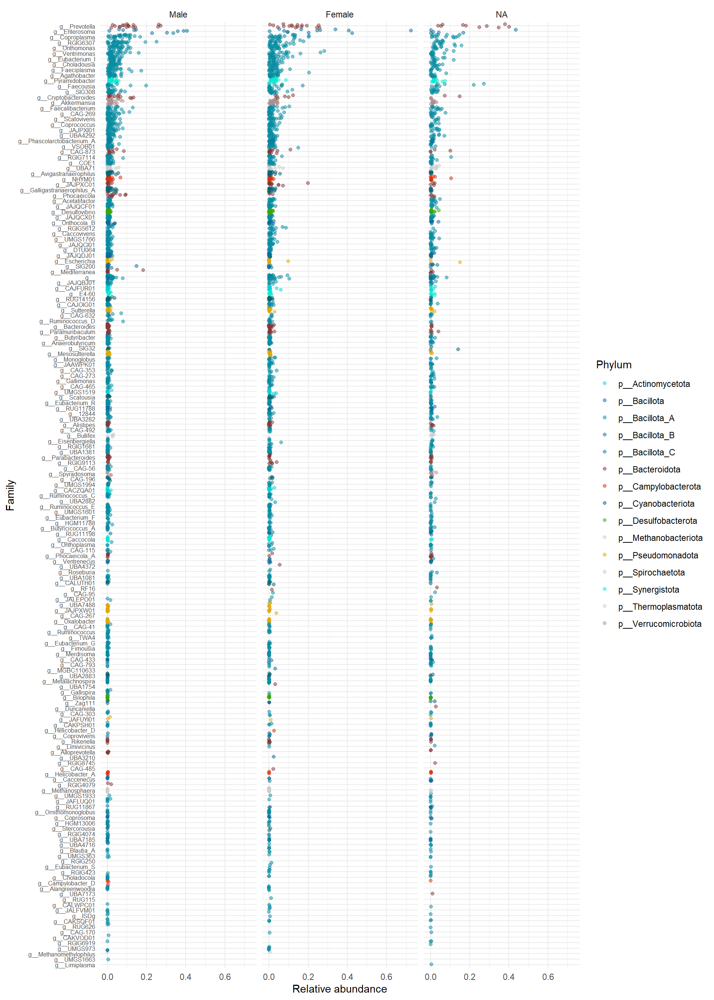
Number of MAGs without genera-level annotation
84| phylum | count_nogene | count_total | percentage |
|---|---|---|---|
| p__Actinomycetota | 5 | 25 | 20.000000 |
| p__Bacillota | 3 | 94 | 3.191489 |
| p__Bacillota_A | 71 | 1440 | 4.930556 |
| p__Bacteroidota | 1 | 71 | 1.408451 |
| p__Cyanobacteriota | 3 | 82 | 3.658537 |
| p__Spirochaetota | 1 | 4 | 25.000000 |
Percentage of MAGs without genus-level annotation
4.623005Number of MAGs without species-level annotation
# A tibble: 1 × 1
Mag_nospecies
<int>
1 1547| phylum | count_nospecies | count_total | species_annotated | percentage | percentage_species |
|---|---|---|---|---|---|
| p__Actinomycetota | 25 | 25 | 0 | 100.00000 | 0.000000 |
| p__Bacillota | 93 | 94 | 1 | 98.93617 | 1.063830 |
| p__Bacillota_A | 1211 | 1440 | 229 | 84.09722 | 15.902778 |
| p__Bacillota_B | 1 | 1 | 0 | 100.00000 | 0.000000 |
| p__Bacillota_C | 7 | 7 | 0 | 100.00000 | 0.000000 |
| p__Bacteroidota | 53 | 71 | 18 | 74.64789 | 25.352113 |
| p__Campylobacterota | 13 | 15 | 2 | 86.66667 | 13.333333 |
| p__Cyanobacteriota | 74 | 82 | 8 | 90.24390 | 9.756098 |
| p__Desulfobacterota | 8 | 8 | 0 | 100.00000 | 0.000000 |
| p__Methanobacteriota | 1 | 1 | 0 | 100.00000 | 0.000000 |
| p__Pseudomonadota | 24 | 34 | 10 | 70.58824 | 29.411765 |
| p__Spirochaetota | 4 | 4 | 0 | 100.00000 | 0.000000 |
| p__Synergistota | 17 | 17 | 0 | 100.00000 | 0.000000 |
| p__Thermoplasmatota | 11 | 12 | 1 | 91.66667 | 8.333333 |
| p__Verrucomicrobiota | 5 | 6 | 1 | 83.33333 | 16.666667 |
Percentage of MAGs without species-level annotation
85.140344 Alpha diversity
4.1 Gut microbiota
load("data/data.Rdata")
treatment_colors <- c("#f56042","#429ef5", "#42f58d", "#b142f5")
sample_metadata$broad_environment <- factor(sample_metadata$broad_environment, levels=c("1000198 - Mixed forest", "1000221 - Temperate woodland", "1000218 - Xeric shrubland", "1000245 - Cropland"))# Calculate Hill numbers
richness <- genome_counts_filt %>%
column_to_rownames(var = "genome") %>%
dplyr::select(where(~ !all(. == 0))) %>%
hilldiv(., q = 0) %>%
t() %>%
as.data.frame() %>%
dplyr::rename(richness = 1) %>%
rownames_to_column(var = "sample")
neutral <- genome_counts_filt %>%
column_to_rownames(var = "genome") %>%
dplyr::select(where(~ !all(. == 0))) %>%
hilldiv(., q = 1) %>%
t() %>%
as.data.frame() %>%
dplyr::rename(neutral = 1) %>%
rownames_to_column(var = "sample")
phylogenetic <- genome_counts_filt %>%
column_to_rownames(var = "genome") %>%
dplyr::select(where(~ !all(. == 0))) %>%
hilldiv(., q = 1, tree = genome_tree) %>%
t() %>%
as.data.frame() %>%
dplyr::rename(phylogenetic = 1) %>%
rownames_to_column(var = "sample")
# Aggregate basal GIFT into elements
dist <- genome_gifts %>%
to.elements(., GIFT_db) %>%
traits2dist(., method = "gower")
functional <- genome_counts_filt %>%
filter(genome %in% rownames(dist)) %>%
column_to_rownames(var = "genome") %>%
dplyr::select(where(~ !all(. == 0))) %>%
hilldiv(., q = 1, dist = dist) %>%
t() %>%
as.data.frame() %>%
dplyr::rename(functional = 1) %>%
rownames_to_column(var = "sample") %>%
mutate(functional = if_else(is.nan(functional), 1, functional))
# Merge all metrics
alpha_div <- richness %>%
full_join(neutral, by = join_by(sample == sample)) %>%
full_join(phylogenetic, by = join_by(sample == sample)) %>%
full_join(functional, by = join_by(sample == sample))| alpha | Total | Xeric_shrubland | Temperate_woodland | Cropland | Mixed_forest |
|---|---|---|---|---|---|
| richness | 307.14±137.95 | 331.67±156.38 | 290.87±124.42 | 423.73±156.53 | 196.6±87.35 |
| neutral | 115.2±68.51 | 125.56±81.45 | 115.36±64.88 | 143.35±80.62 | 41.57±21.29 |
| phylogenetic | 7.35±1.43 | 7.66±1.29 | 7.17±1.38 | 8.68±0.97 | 6.41±1.48 |
| functional | 1.37±0.06 | 1.33±0.03 | 1.38±0.07 | 1.36±0.03 | 1.33±0.04 |
#Richness
plot1 <- alpha_div %>%
pivot_longer(-sample, names_to = "metric", values_to = "value") %>%
left_join(., sample_metadata, by = join_by(sample == sample)) %>%
filter(metric=="richness") %>%
ggplot(aes(y = value, x = broad_environment, group=broad_environment, color=broad_environment, fill=broad_environment)) +
geom_jitter(width = 0.2, show.legend = FALSE) +
geom_boxplot(width = 0.5, alpha=0.5,outlier.shape = NA, show.legend = FALSE) +
scale_color_manual(values=treatment_colors)+
scale_fill_manual(values=treatment_colors) +
scale_x_discrete(labels=c("1000218 - Xeric shrubland" = "Xeric shrubland", "1000245 - Cropland" = "Cropland", "1000198 - Mixed forest" = "Mixed forest", "1000221 - Temperate woodland" = "Temperate woodland")) +
stat_compare_means(method = "wilcox.test", show.legend = F, size = 3, label.y = c(300), label.x = c(1.5))+
coord_cartesian(xlim = c(1, NA)) +
theme_classic() +
theme(
axis.title.x = element_blank(),
strip.background = element_blank(),
panel.grid.minor.x = element_line(size = .1, color = "grey"),
axis.text = element_text(size=10),
axis.title.y = element_text(margin = margin(t = 0, r = 20, b = 0, l = 0))
)+
labs(y = "Richness")
plot2 <- alpha_div %>%
pivot_longer(-sample, names_to = "metric", values_to = "value") %>%
left_join(., sample_metadata, by = join_by(sample == sample)) %>%
filter(metric=="neutral") %>%
ggplot(aes(y = value, x = broad_environment, group=broad_environment, color=broad_environment, fill=broad_environment)) +
geom_jitter(width = 0.2, show.legend = FALSE) +
geom_boxplot(width = 0.5, alpha=0.5,outlier.shape = NA, show.legend = FALSE) +
scale_color_manual(values=treatment_colors)+
scale_fill_manual(values=treatment_colors) +
scale_x_discrete(labels=c("1000218 - Xeric shrubland" = "Xeric shrubland", "1000245 - Cropland" = "Cropland", "1000198 - Mixed forest" = "Mixed forest", "1000221 - Temperate woodland" = "Temperate woodland")) +
stat_compare_means(method = "wilcox.test", show.legend = F, size = 3, label.y = c(190), label.x = c(1.5))+
coord_cartesian(xlim = c(1, NA)) +
theme_classic() +
theme(
axis.title.x = element_blank(),
strip.background = element_blank(),
panel.grid.minor.x = element_line(size = .1, color = "grey"),
axis.text = element_text(size=10),
axis.title.y = element_text(margin = margin(t = 0, r = 20, b = 0, l = 0))
)+
labs(y = "Neutral alpha diversity")
plot3 <- alpha_div %>%
pivot_longer(-sample, names_to = "metric", values_to = "value") %>%
left_join(., sample_metadata, by = join_by(sample == sample)) %>%
filter(metric=="phylogenetic") %>%
ggplot(aes(y = value, x = broad_environment, group=broad_environment, color=broad_environment, fill=broad_environment)) +
geom_jitter(width = 0.2, show.legend = FALSE) +
geom_boxplot(width = 0.5, alpha=0.5,outlier.shape = NA, show.legend = FALSE) +
scale_color_manual(values=treatment_colors)+
scale_fill_manual(values=treatment_colors) +
scale_x_discrete(labels=c("1000218 - Xeric shrubland" = "Xeric shrubland", "1000245 - Cropland" = "Cropland", "1000198 - Mixed forest" = "Mixed forest", "1000221 - Temperate woodland" = "Temperate woodland")) +
stat_compare_means(method = "wilcox.test", show.legend = F, size = 3, label.y = c(12), label.x = c(1.5))+
coord_cartesian(xlim = c(1, NA)) +
theme_classic() +
theme(
axis.title.x = element_blank(),
strip.background = element_blank(),
panel.grid.minor.x = element_line(size = .1, color = "grey"),
axis.text = element_text(size=10),
axis.title.y = element_text(margin = margin(t = 0, r = 20, b = 0, l = 0))
)+
labs(y = "Phylogenetic alpha diversity")
plot4 <- alpha_div %>%
pivot_longer(-sample, names_to = "metric", values_to = "value") %>%
left_join(., sample_metadata, by = join_by(sample == sample)) %>%
filter(metric=="functional") %>%
ggplot(aes(y = value, x = broad_environment, group=broad_environment, color=broad_environment, fill=broad_environment)) +
geom_jitter(width = 0.2, show.legend = FALSE) +
geom_boxplot(width = 0.5, alpha=0.5,outlier.shape = NA, show.legend = FALSE) +
scale_color_manual(values=treatment_colors)+
scale_fill_manual(values=treatment_colors) +
scale_x_discrete(labels=c("1000218 - Xeric shrubland" = "Xeric shrubland", "1000245 - Cropland" = "Cropland", "1000198 - Mixed forest" = "Mixed forest", "1000221 - Temperate woodland" = "Temperate woodland")) +
stat_compare_means(method = "wilcox.test", show.legend = F, size = 3, label.y = c(2), label.x = c(1.5))+
coord_cartesian(xlim = c(1, NA)) +
theme_classic() +
theme(
axis.title.x = element_blank(),
strip.background = element_blank(),
panel.grid.minor.x = element_line(size = .1, color = "grey"),
axis.text = element_text(size=10),
axis.title.y = element_text(margin = margin(t = 0, r = 20, b = 0, l = 0))
)+
labs(y = "Functional alpha diversity")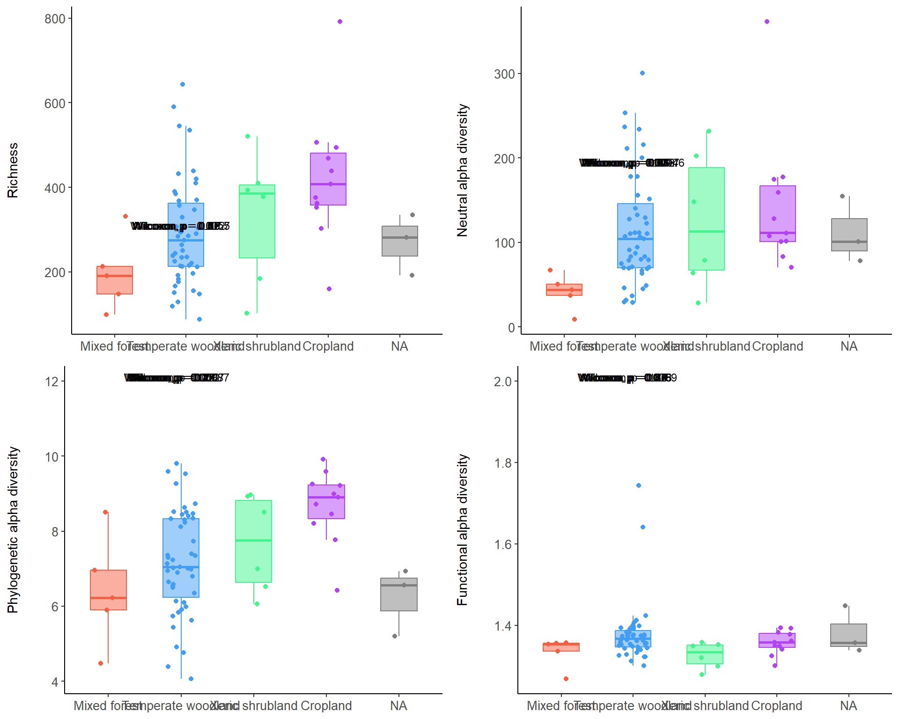
#Richness
plot1 <- alpha_div %>%
pivot_longer(-sample, names_to = "metric", values_to = "value") %>%
left_join(., sample_metadata, by = join_by(sample == sample)) %>%
filter(metric=="richness") %>%
ggplot(aes(y = value, x = sex, group=sex, color=broad_environment, fill=broad_environment)) +
geom_jitter(width = 0.2, show.legend = FALSE) +
geom_boxplot(width = 0.5, alpha=0.5,outlier.shape = NA, show.legend = FALSE) +
scale_color_manual(values=treatment_colors)+
scale_fill_manual(values=treatment_colors) +
facet_grid(~factor(broad_environment, labels=c("1000218 - Xeric shrubland" = "Xeric shrubland", "1000245 - Cropland" = "Cropland", "1000198 - Mixed forest" = "Mixed forest", "1000221 - Temperate woodland" = "Temperate woodland")), scale="free", space = "free")+
coord_cartesian(xlim = c(1, NA)) +
theme_classic() +
theme(
axis.title.x = element_blank(),
strip.background = element_blank(),
strip.text = element_text(size = 12, lineheight = 0.6),
panel.grid.minor.x = element_line(size = .1, color = "grey"),
axis.text = element_text(size=10),
axis.title.y = element_text(margin = margin(t = 0, r = 20, b = 0, l = 0))
)+
labs(y = "Richness")
plot2 <- alpha_div %>%
pivot_longer(-sample, names_to = "metric", values_to = "value") %>%
left_join(., sample_metadata, by = join_by(sample == sample)) %>%
filter(metric=="neutral") %>%
ggplot(aes(y = value, x = sex, group=sex, color=broad_environment, fill=broad_environment)) +
geom_jitter(width = 0.2, show.legend = FALSE) +
geom_boxplot(width = 0.5, alpha=0.5,outlier.shape = NA, show.legend = FALSE) +
scale_color_manual(values=treatment_colors)+
scale_fill_manual(values=treatment_colors) +
facet_grid(~factor(broad_environment, labels=c("1000218 - Xeric shrubland" = "Xeric shrubland", "1000245 - Cropland" = "Cropland", "1000198 - Mixed forest" = "Mixed forest", "1000221 - Temperate woodland" = "Temperate woodland")), scale="free", space = "free")+
coord_cartesian(xlim = c(1, NA)) +
theme_classic() +
theme(
axis.title.x = element_blank(),
strip.background = element_blank(),
strip.text = element_text(size = 12, lineheight = 0.6),
panel.grid.minor.x = element_line(size = .1, color = "grey"),
axis.text = element_text(size=10),
axis.title.y = element_text(margin = margin(t = 0, r = 20, b = 0, l = 0))
)+
labs(y = "Neutral alpha diversity")
plot3 <- alpha_div %>%
pivot_longer(-sample, names_to = "metric", values_to = "value") %>%
left_join(., sample_metadata, by = join_by(sample == sample)) %>%
filter(metric=="phylogenetic") %>%
ggplot(aes(y = value, x = sex, group=sex, color=broad_environment, fill=broad_environment)) +
geom_jitter(width = 0.2, show.legend = FALSE) +
geom_boxplot(width = 0.5, alpha=0.5,outlier.shape = NA, show.legend = FALSE) +
scale_color_manual(values=treatment_colors)+
scale_fill_manual(values=treatment_colors) +
facet_grid(~factor(broad_environment, labels=c("1000218 - Xeric shrubland" = "Xeric shrubland", "1000245 - Cropland" = "Cropland", "1000198 - Mixed forest" = "Mixed forest", "1000221 - Temperate woodland" = "Temperate woodland")), scale="free", space = "free")+
coord_cartesian(xlim = c(1, NA)) +
theme_classic() +
theme(
axis.title.x = element_blank(),
strip.background = element_blank(),
strip.text = element_text(size = 12, lineheight = 0.6),
panel.grid.minor.x = element_line(size = .1, color = "grey"),
axis.text = element_text(size=10),
axis.title.y = element_text(margin = margin(t = 0, r = 20, b = 0, l = 0))
)+
labs(y = "Phylogenetic alpha diversity")
plot4 <- alpha_div %>%
pivot_longer(-sample, names_to = "metric", values_to = "value") %>%
left_join(., sample_metadata, by = join_by(sample == sample)) %>%
filter(metric=="functional") %>%
ggplot(aes(y = value, x = sex, group=sex, color=broad_environment, fill=broad_environment)) +
geom_jitter(width = 0.2, show.legend = FALSE) +
geom_boxplot(width = 0.5, alpha=0.5,outlier.shape = NA, show.legend = FALSE) +
scale_color_manual(values=treatment_colors)+
scale_fill_manual(values=treatment_colors) +
facet_grid(~factor(broad_environment, labels=c("1000218 - Xeric shrubland" = "Xeric shrubland", "1000245 - Cropland" = "Cropland", "1000198 - Mixed forest" = "Mixed forest", "1000221 - Temperate woodland" = "Temperate woodland")), scale="free", space = "free")+
coord_cartesian(xlim = c(1, NA)) +
theme_classic() +
theme(
axis.title.x = element_blank(),
strip.background = element_blank(),
strip.text = element_text(size = 12, lineheight = 0.6),
panel.grid.minor.x = element_line(size = .1, color = "grey"),
axis.text = element_text(size=10),
axis.title.y = element_text(margin = margin(t = 0, r = 20, b = 0, l = 0))
)+
labs(y = "Functional alpha diversity")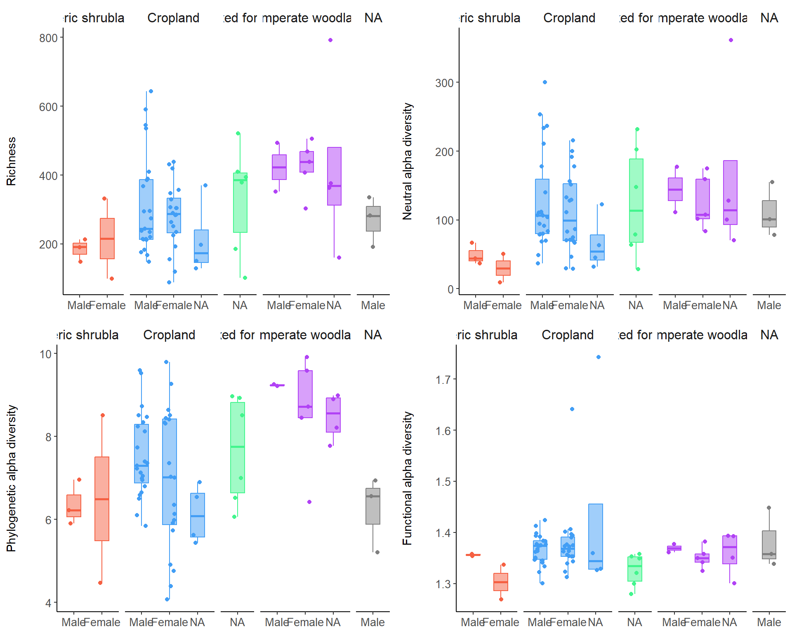
4.1.1 Mixed models
alpha_div_meta <- alpha_div %>%
left_join(sample_metadata, by = join_by(sample == sample))
alpha_div_meta_clean <- alpha_div_meta %>%
filter(!is.na(richness), !is.na(broad_environment), !is.na(sex))
alpha_dic_meta_filtered_out <- anti_join(alpha_div_meta, alpha_div_meta_clean)
Model_richness_random <- lme(fixed = richness ~ broad_environment, data = alpha_div_meta_clean,
random = ~ 1 | sex)
summary(Model_richness_random)Linear mixed-effects model fit by REML
Data: alpha_div_meta_clean
AIC BIC logLik
660.2575 670.0137 -325.1288
Random effects:
Formula: ~1 | sex
(Intercept) Residual
StdDev: 0.008756482 117.1185
Fixed effects: richness ~ broad_environment
Value Std.Error DF t-value p-value
(Intercept) 196.6000 52.37697 51 3.753558 0.0004
broad_environment1000221 - Temperate woodland 101.6326 55.33842 51 1.836564 0.0721
broad_environment1000245 - Cropland 227.6857 68.57756 51 3.320120 0.0017
Correlation:
(Intr) b_1-Tw
broad_environment1000221 - Temperate woodland -0.946
broad_environment1000245 - Cropland -0.764 0.723
Standardized Within-Group Residuals:
Min Q1 Med Q3 Max
-1.7950418 -0.6850547 -0.1129844 0.5485118 2.9437495
Number of Observations: 55
Number of Groups: 2 Model_richness<- lm(formula = richness ~ broad_environment+sex, data = alpha_div_meta_clean)
summary(Model_richness)
Call:
lm(formula = richness ~ broad_environment + sex, data = alpha_div_meta_clean)
Residuals:
Min 1Q Median 3Q Max
-198.26 -87.96 -12.64 60.05 334.36
Coefficients:
Estimate Std. Error t value Pr(>|t|)
(Intercept) 205.55 54.20 3.793 0.000396 ***
broad_environment1000221 - Temperate woodland 103.09 55.66 1.852 0.069778 .
broad_environment1000245 - Cropland 234.72 69.66 3.369 0.001442 **
sexFemale -22.38 32.24 -0.694 0.490722
---
Signif. codes: 0 '***' 0.001 '**' 0.01 '*' 0.05 '.' 0.1 ' ' 1
Residual standard error: 117.7 on 51 degrees of freedom
Multiple R-squared: 0.1912, Adjusted R-squared: 0.1436
F-statistic: 4.018 on 3 and 51 DF, p-value: 0.01215Model_richness_sex_random <- lme(fixed = richness ~ sex, data = alpha_div_meta_clean,
random = ~ 1 | broad_environment)
summary(Model_richness_sex_random)Linear mixed-effects model fit by REML
Data: alpha_div_meta_clean
AIC BIC logLik
674.7345 682.6157 -333.3673
Random effects:
Formula: ~1 | broad_environment
(Intercept) Residual
StdDev: 103.5142 117.8367
Fixed effects: richness ~ sex
Value Std.Error DF t-value p-value
(Intercept) 318.2455 66.28983 51 4.800820 0.0000
sexFemale -19.3594 32.20735 51 -0.601086 0.5504
Correlation:
(Intr)
sexFemale -0.256
Standardized Within-Group Residuals:
Min Q1 Med Q3 Max
-1.6989576 -0.7600262 -0.1150659 0.5803378 2.8466596
Number of Observations: 55
Number of Groups: 3 $emmeans
sex emmean SE df lower.CL upper.CL
Male 318 66.3 2 33.0 603
Female 299 65.9 2 15.4 582
Degrees-of-freedom method: containment
Confidence level used: 0.95
$contrasts
contrast estimate SE df t.ratio p.value
Male - Female 19.4 32.2 51 0.601 0.5504
Degrees-of-freedom method: containment Model_neutral_random <- lme(fixed = neutral ~ broad_environment, data = alpha_div_meta_clean,
random = ~ 1 | sex)
summary(Model_neutral_random)Linear mixed-effects model fit by REML
Data: alpha_div_meta_clean
AIC BIC logLik
591.136 600.8923 -290.568
Random effects:
Formula: ~1 | sex
(Intercept) Residual
StdDev: 3.155776 60.21234
Fixed effects: neutral ~ broad_environment
Value Std.Error DF t-value p-value
(Intercept) 41.45285 27.02351 51 1.533955 0.1312
broad_environment1000221 - Temperate woodland 78.47859 28.45168 51 2.758311 0.0080
broad_environment1000245 - Cropland 89.64625 35.28272 51 2.540797 0.0141
Correlation:
(Intr) b_1-Tw
broad_environment1000221 - Temperate woodland -0.943
broad_environment1000245 - Cropland -0.761 0.723
Standardized Within-Group Residuals:
Min Q1 Med Q3 Max
-1.4967057 -0.6852481 -0.2208246 0.5080001 2.9856016
Number of Observations: 55
Number of Groups: 2 Model_neutral<- lm(formula = neutral ~ broad_environment+sex, data = alpha_div_meta_clean)
summary(Model_neutral)
Call:
lm(formula = neutral ~ broad_environment + sex, data = alpha_div_meta_clean)
Residuals:
Min 1Q Median 3Q Max
-91.26 -41.01 -18.18 33.87 172.37
Coefficients:
Estimate Std. Error t value Pr(>|t|)
(Intercept) 48.40 27.72 1.746 0.08685 .
broad_environment1000221 - Temperate woodland 79.52 28.47 2.793 0.00734 **
broad_environment1000245 - Cropland 94.65 35.64 2.656 0.01053 *
sexFemale -17.09 16.49 -1.036 0.30511
---
Signif. codes: 0 '***' 0.001 '**' 0.01 '*' 0.05 '.' 0.1 ' ' 1
Residual standard error: 60.21 on 51 degrees of freedom
Multiple R-squared: 0.1539, Adjusted R-squared: 0.1042
F-statistic: 3.093 on 3 and 51 DF, p-value: 0.03501Model_neutral_sex_random <- lme(fixed = neutral ~ sex, data = alpha_div_meta_clean,
random = ~ 1 | broad_environment)
summary(Model_neutral_sex_random)Linear mixed-effects model fit by REML
Data: alpha_div_meta_clean
AIC BIC logLik
602.9621 610.8433 -297.4811
Random effects:
Formula: ~1 | broad_environment
(Intercept) Residual
StdDev: 42.01245 60.31076
Fixed effects: neutral ~ sex
Value Std.Error DF t-value p-value
(Intercept) 108.84953 28.27875 51 3.849164 0.0003
sexFemale -15.66423 16.46757 51 -0.951217 0.3460
Correlation:
(Intr)
sexFemale -0.306
Standardized Within-Group Residuals:
Min Q1 Med Q3 Max
-1.4882909 -0.6737556 -0.3183183 0.6753650 2.8828753
Number of Observations: 55
Number of Groups: 3 $emmeans
sex emmean SE df lower.CL upper.CL
Male 108.8 28.3 2 -12.8 231
Female 93.2 28.0 2 -27.4 214
Degrees-of-freedom method: containment
Confidence level used: 0.95
$contrasts
contrast estimate SE df t.ratio p.value
Male - Female 15.7 16.5 51 0.951 0.3460
Degrees-of-freedom method: containment Model_phylogenetic<- lm(formula = phylogenetic ~ broad_environment+sex, data = alpha_div_meta_clean)
summary(Model_phylogenetic)
Call:
lm(formula = phylogenetic ~ broad_environment + sex, data = alpha_div_meta_clean)
Residuals:
Min 1Q Median 3Q Max
-2.9295 -0.8603 -0.1014 0.9895 2.8013
Coefficients:
Estimate Std. Error t value Pr(>|t|)
(Intercept) 6.6133 0.6269 10.549 2.02e-14 ***
broad_environment1000221 - Temperate woodland 0.8873 0.6438 1.378 0.1741
broad_environment1000245 - Cropland 2.5411 0.8058 3.154 0.0027 **
sexFemale -0.5038 0.3730 -1.351 0.1827
---
Signif. codes: 0 '***' 0.001 '**' 0.01 '*' 0.05 '.' 0.1 ' ' 1
Residual standard error: 1.362 on 51 degrees of freedom
Multiple R-squared: 0.1932, Adjusted R-squared: 0.1457
F-statistic: 4.07 on 3 and 51 DF, p-value: 0.01146Model_phylogenetic_sex_random <- lme(fixed = phylogenetic ~ sex, data = alpha_div_meta_clean,
random = ~ 1 | broad_environment)
Model_phylogenetic_sex_random <- lme(fixed = phylogenetic ~ sex, data = alpha_div_meta_clean,
random = ~ 1 | broad_environment)
summary(Model_phylogenetic_sex_random)Linear mixed-effects model fit by REML
Data: alpha_div_meta_clean
AIC BIC logLik
201.804 209.6852 -96.90202
Random effects:
Formula: ~1 | broad_environment
(Intercept) Residual
StdDev: 1.12689 1.362951
Fixed effects: phylogenetic ~ sex
Value Std.Error DF t-value p-value
(Intercept) 7.746185 0.7299749 51 10.611578 0.0000
sexFemale -0.466249 0.3724362 51 -1.251891 0.2163
Correlation:
(Intr)
sexFemale -0.268
Standardized Within-Group Residuals:
Min Q1 Med Q3 Max
-2.17047880 -0.65844821 -0.01077506 0.80316831 2.03418595
Number of Observations: 55
Number of Groups: 3 $emmeans
sex emmean SE df lower.CL upper.CL
Male 7.75 0.730 2 4.61 10.9
Female 7.28 0.725 2 4.16 10.4
Degrees-of-freedom method: containment
Confidence level used: 0.95
$contrasts
contrast estimate SE df t.ratio p.value
Male - Female 0.466 0.372 51 1.252 0.2163
Degrees-of-freedom method: containment Model_functional_random <- lme(fixed = functional ~ broad_environment, data = alpha_div_meta_clean,
random = ~ 1 | sex)
summary(Model_functional_random)Linear mixed-effects model fit by REML
Data: alpha_div_meta_clean
AIC BIC logLik
-154.3579 -144.6017 82.17895
Random effects:
Formula: ~1 | sex
(Intercept) Residual
StdDev: 8.821509e-07 0.0464372
Fixed effects: functional ~ broad_environment
Value Std.Error DF t-value p-value
(Intercept) 1.3345237 0.02076735 51 64.26067 0.0000
broad_environment1000221 - Temperate woodland 0.0382453 0.02194156 51 1.74306 0.0874
broad_environment1000245 - Cropland 0.0217147 0.02719084 51 0.79860 0.4282
Correlation:
(Intr) b_1-Tw
broad_environment1000221 - Temperate woodland -0.946
broad_environment1000245 - Cropland -0.764 0.723
Standardized Within-Group Residuals:
Min Q1 Med Q3 Max
-1.56046208 -0.45545337 0.02617571 0.41673185 5.77462530
Number of Observations: 55
Number of Groups: 2 Model_functional<- lm(formula = functional ~ broad_environment+sex, data = alpha_div_meta_clean)
summary(Model_functional)
Call:
lm(formula = functional ~ broad_environment + sex, data = alpha_div_meta_clean)
Residuals:
Min 1Q Median 3Q Max
-0.071081 -0.021395 0.000071 0.020129 0.266568
Coefficients:
Estimate Std. Error t value Pr(>|t|)
(Intercept) 1.333335 0.021579 61.789 <2e-16 ***
broad_environment1000221 - Temperate woodland 0.038052 0.022160 1.717 0.092 .
broad_environment1000245 - Cropland 0.020781 0.027737 0.749 0.457
sexFemale 0.002971 0.012838 0.231 0.818
---
Signif. codes: 0 '***' 0.001 '**' 0.01 '*' 0.05 '.' 0.1 ' ' 1
Residual standard error: 0.04687 on 51 degrees of freedom
Multiple R-squared: 0.06378, Adjusted R-squared: 0.008708
F-statistic: 1.158 on 3 and 51 DF, p-value: 0.3348Model_functional_sex_random <- lme(fixed = functional ~ sex, data = alpha_div_meta_clean,
random = ~ 1 | broad_environment)
summary(Model_functional_sex_random)Linear mixed-effects model fit by REML
Data: alpha_div_meta_clean
AIC BIC logLik
-158.4514 -150.5703 83.22572
Random effects:
Formula: ~1 | broad_environment
(Intercept) Residual
StdDev: 0.01309153 0.04678291
Fixed effects: functional ~ sex
Value Std.Error DF t-value p-value
(Intercept) 1.3594219 0.01282884 51 105.96608 0.0000
sexFemale 0.0029804 0.01269615 51 0.23475 0.8153
Correlation:
(Intr)
sexFemale -0.509
Standardized Within-Group Residuals:
Min Q1 Med Q3 Max
-1.84791978 -0.40639674 0.02278814 0.31350399 5.75641981
Number of Observations: 55
Number of Groups: 3 $emmeans
sex emmean SE df lower.CL upper.CL
Male 1.36 0.0128 2 1.30 1.41
Female 1.36 0.0126 2 1.31 1.42
Degrees-of-freedom method: containment
Confidence level used: 0.95
$contrasts
contrast estimate SE df t.ratio p.value
Male - Female -0.00298 0.0127 51 -0.235 0.8153
Degrees-of-freedom method: containment 5 Beta diversity
5.1 Gut microbiota
load("data/data.Rdata")
#load("data/beta_all.Rdata")
treatment_colors <- c("#f56042","#429ef5", "#42f58d", "#b142f5", "#f5e642")beta_div
#Presence/Absence
beta_q0n <- genome_counts_filt %>%
column_to_rownames(., "genome") %>%
filter(rowSums(. != 0, na.rm = TRUE) > 0) %>%
select_if(~!all(. == 0)) %>%
hillpair(., q = 0)
#Abundance-sensitive
beta_q1n <- genome_counts_filt %>%
column_to_rownames(., "genome") %>%
filter(rowSums(. != 0, na.rm = TRUE) > 0) %>%
select_if(~!all(. == 0)) %>%
hillpair(., q = 1)
#Abundance + Phylogeny
genome_counts_filt_beta <- genome_counts_filt %>%
column_to_rownames(., "genome") %>%
filter(rowSums(. != 0, na.rm = TRUE) > 0) %>%
select_if(~!all(. == 0))%>%
rownames_to_column(., "genome")
#Abundance + Trait Distance
genome_tree <- keep.tip(genome_tree, tip=genome_counts_filt_beta$genome)
beta_q1p <- genome_counts_filt %>%
column_to_rownames(., "genome") %>%
filter(rowSums(. != 0, na.rm = TRUE) > 0) %>%
select_if(~!all(. == 0)) %>%
hillpair(., q = 1, tree = genome_tree)# 1. Only use genomes that also occur in genome_gifts
valid_genomes <- genome_counts_filt_beta$genome[genome_counts_filt_beta$genome %in% rownames(genome_gifts)]
# 2. filter genome_gifts on these genomes
genome_gifts1 <- genome_gifts[valid_genomes, ]
genome_gifts1 <- genome_gifts1[, colSums(genome_gifts1 != 0) > 0]
# 3. Calculate functional distance matrix
dist <- genome_gifts1 %>%
to.elements(., GIFT_db) %>%
traits2dist(., method = "gower")
# 4. Determine genomes that exist in both genome_counts_filt_beta and dist
common_genomes <- intersect(
genome_counts_filt_beta$genome,
rownames(dist)
)
# 5. genome_counts_filt to filter and sort the shared genomes
genome_counts_filt_matched <- genome_counts_filt %>%
column_to_rownames("genome") %>%
filter(rownames(.) %in% common_genomes) %>%
select_if(~!all(. == 0)) # optional: leere Spalten raus
# 6. Limit and sort dist matrix to common genomes
dist_matched <- dist[common_genomes, common_genomes]
beta_q1f <- genome_counts_filt_matched %>%
hillpair(q = 1, dist = dist_matched)5.1.1 Permanova
run_permanova <- function(beta_matrix, metadata, sample_col = "sample", group_col, group_vars, pairwise = FALSE) {
# 1. Sample labels from Beta-Matrix
sample_labels <- labels(beta_matrix$S)
# 2. Metadata filtered and sorted
metadata_matched <- metadata %>%
filter(!!sym(sample_col) %in% sample_labels) %>%
arrange(match(!!sym(sample_col), sample_labels))
# 3. Synchronize beta_matrix$S to metadata
common_samples <- intersect(sample_labels, metadata_matched[[sample_col]])
beta_matrix$S <- beta_matrix$S[common_samples, common_samples]
metadata_matched <- metadata_matched %>%
filter(!!sym(sample_col) %in% common_samples) %>%
arrange(match(!!sym(sample_col), common_samples))
# 4. Remove samples with NA in group_col
valid_idx <- !is.na(metadata_matched[[group_col]])
beta_matrix$S <- beta_matrix$S[valid_idx, valid_idx]
metadata_matched <- metadata_matched[valid_idx, ]
# 5. Betadisper and Permutest
cat("\n===== Beta Dispersion Test =====\n")
dispersion_result <- betadisper(beta_matrix$S, metadata_matched[[group_col]])
print(permutest(dispersion_result))
# 6. Dynamic formula building
formula_str <- paste0("beta_matrix$S ~ ", paste(group_vars, collapse = " + "))
cat("\n===== PERMANOVA Test (adonis2) =====\n")
permanova_result <- adonis2(as.formula(formula_str),
data = metadata_matched,
permutations = 999,
by = "terms")
print(broom::tidy(permanova_result))
# 7. (Optional) Pairwise Adonis
if (pairwise) {
cat("\n===== Pairwise PERMANOVA =====\n")
print(pairwise.adonis(beta_matrix$S, metadata_matched[[group_col]], perm = 999))
}
# 8. Return outputs
return(list(
dispersion = dispersion_result,
permanova = permanova_result
))
}6 Richness
run_permanova(
beta_matrix = beta_q0n$S,
metadata = sample_metadata_without_NA,
sample_col = "sample",
group_col = "broad_environment",
group_vars = c("broad_environment","sex", "broad_environment:sex"),
pairwise = FALSE
)#Neutral diversity
8 Functional diversity (beta_q1f)
run_permanova(
beta_matrix = beta_q1f,
metadata = sample_metadata_without_NA,
sample_col = "sample",
group_col = "broad_environment",
group_vars = c("broad_environment","sex", "broad_environment:sex"),
pairwise = TRUE
)8.0.1 NMDS
####Richness
beta_q0n$S %>%
vegan::metaMDS(., trymax = 500, k = 2, trace=0) %>%
vegan::scores() %>%
as_tibble(., rownames = "sample") %>%
dplyr::left_join(sample_metadata, by = join_by(sample == sample)) %>%
group_by(broad_environment) %>%
mutate(x_cen = mean(NMDS1, na.rm = TRUE)) %>%
mutate(y_cen = mean(NMDS2, na.rm = TRUE)) %>%
ungroup() %>%
ggplot(aes(x = NMDS1, y = NMDS2, color = broad_environment, shape = as.factor(sex))) +
geom_point(size = 4) +
scale_color_manual(values = treatment_colors,labels=c("high" = "High-altitude", "low" = "Low-altitude")) +
geom_segment(aes(x = x_cen, y = y_cen, xend = NMDS1, yend = NMDS2), alpha = 0.9, show.legend = FALSE) +
theme(
axis.title = element_text(size = 12, face = "bold"),
axis.text = element_text(size = 10),
panel.background = element_blank(),
axis.line = element_line(size = 0.5, linetype = "solid", colour = "black"),
legend.text = element_text(size = 10),
legend.title = element_text(size = 12),
legend.position = "right", legend.box = "vertical"
) +
labs(color="Environmental context", shape="sex")+geom_text_repel(aes(label = sample), size=3)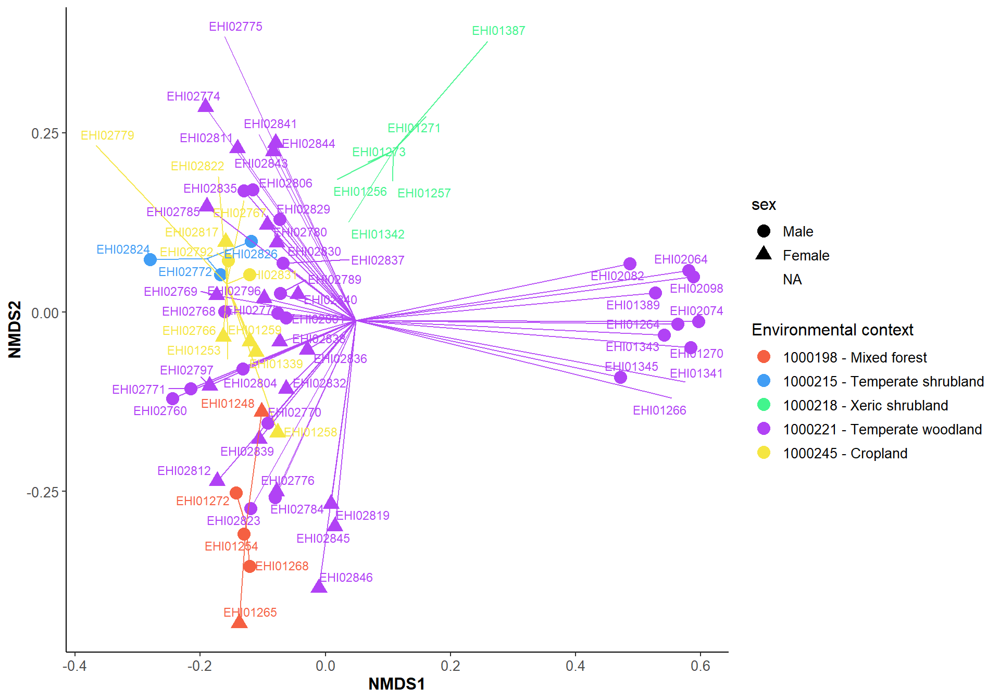
8.0.1.1 Neutral diversity
beta_q1n$S %>%
vegan::metaMDS(., trymax = 500, k = 2, trace=0) %>%
vegan::scores() %>%
as_tibble(., rownames = "sample") %>%
dplyr::left_join(sample_metadata, by = join_by(sample == sample)) %>%
group_by(broad_environment) %>%
mutate(x_cen = mean(NMDS1, na.rm = TRUE)) %>%
mutate(y_cen = mean(NMDS2, na.rm = TRUE)) %>%
ungroup() %>%
ggplot(aes(x = NMDS1, y = NMDS2, color = broad_environment, shape = as.factor(sex))) +
geom_point(size = 4) +
scale_color_manual(values = treatment_colors,labels=c("high" = "High-altitude", "low" = "Low-altitude")) +
geom_segment(aes(x = x_cen, y = y_cen, xend = NMDS1, yend = NMDS2), alpha = 0.9, show.legend = FALSE) +
theme(
axis.title = element_text(size = 12, face = "bold"),
axis.text = element_text(size = 10),
panel.background = element_blank(),
axis.line = element_line(size = 0.5, linetype = "solid", colour = "black"),
legend.text = element_text(size = 10),
legend.title = element_text(size = 12),
legend.position = "right", legend.box = "vertical"
) +
labs(color="Evironmental context", shape="sex")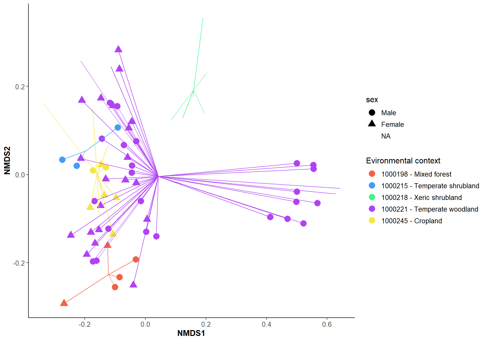
8.0.1.2 Phylogenetic diversity
beta_q1p$S %>%
vegan::metaMDS(., trymax = 500, k = 2, trace=0) %>%
vegan::scores() %>%
as_tibble(., rownames = "sample") %>%
dplyr::left_join(sample_metadata, by = join_by(sample == sample)) %>%
group_by(broad_environment) %>%
mutate(x_cen = mean(NMDS1, na.rm = TRUE)) %>%
mutate(y_cen = mean(NMDS2, na.rm = TRUE)) %>%
ungroup() %>%
ggplot(aes(x = NMDS1, y = NMDS2, color = broad_environment, shape = as.factor(sex))) +
geom_point(size = 4) +
scale_color_manual(values = treatment_colors,labels=c("high" = "High-altitude", "low" = "Low-altitude")) +
geom_segment(aes(x = x_cen, y = y_cen, xend = NMDS1, yend = NMDS2), alpha = 0.9, show.legend = FALSE) +
theme(
axis.title = element_text(size = 12, face = "bold"),
axis.text = element_text(size = 10),
panel.background = element_blank(),
axis.line = element_line(size = 0.5, linetype = "solid", colour = "black"),
legend.text = element_text(size = 10),
legend.title = element_text(size = 12),
legend.position = "right", legend.box = "vertical"
) +
labs(color="environment context", shape="sex")+geom_text_repel(aes(label = sample), size=3)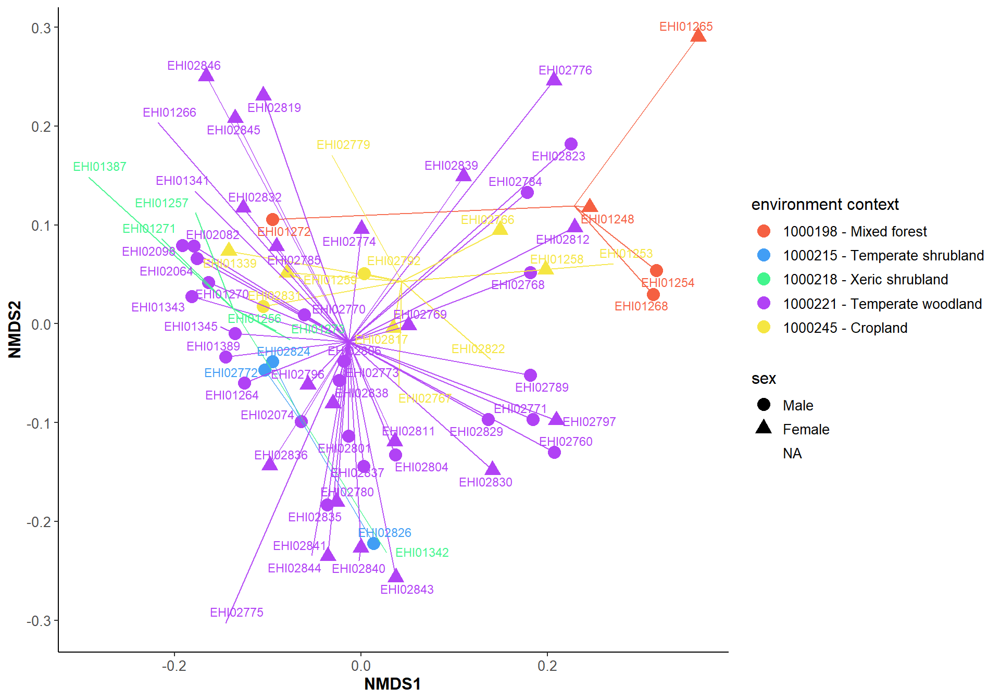
8.0.1.3 Functional diversity
beta_q1f$S %>%
vegan::metaMDS(., trymax = 500, k = 2, trace=0) %>%
vegan::scores() %>%
as_tibble(., rownames = "sample") %>%
dplyr::left_join(sample_metadata, by = join_by(sample == sample)) %>%
group_by(broad_environment) %>%
mutate(x_cen = mean(NMDS1, na.rm = TRUE)) %>%
mutate(y_cen = mean(NMDS2, na.rm = TRUE)) %>%
ungroup() %>%
ggplot(aes(x = NMDS1, y = NMDS2, color = broad_environment, shape = as.factor(sex))) +
geom_point(size = 4) +
scale_color_manual(values = treatment_colors,labels=c("high" = "High-altitude", "low" = "Low-altitude")) +
geom_segment(aes(x = x_cen, y = y_cen, xend = NMDS1, yend = NMDS2), alpha = 0.9, show.legend = FALSE) +
theme(
axis.title = element_text(size = 12, face = "bold"),
axis.text = element_text(size = 10),
panel.background = element_blank(),
axis.line = element_line(size = 0.5, linetype = "solid", colour = "black"),
legend.text = element_text(size = 10),
legend.title = element_text(size = 12),
legend.position = "right", legend.box = "vertical"
) +
labs(color="broad_environment", shape="sex")+geom_text_repel(aes(label = sample), size=3)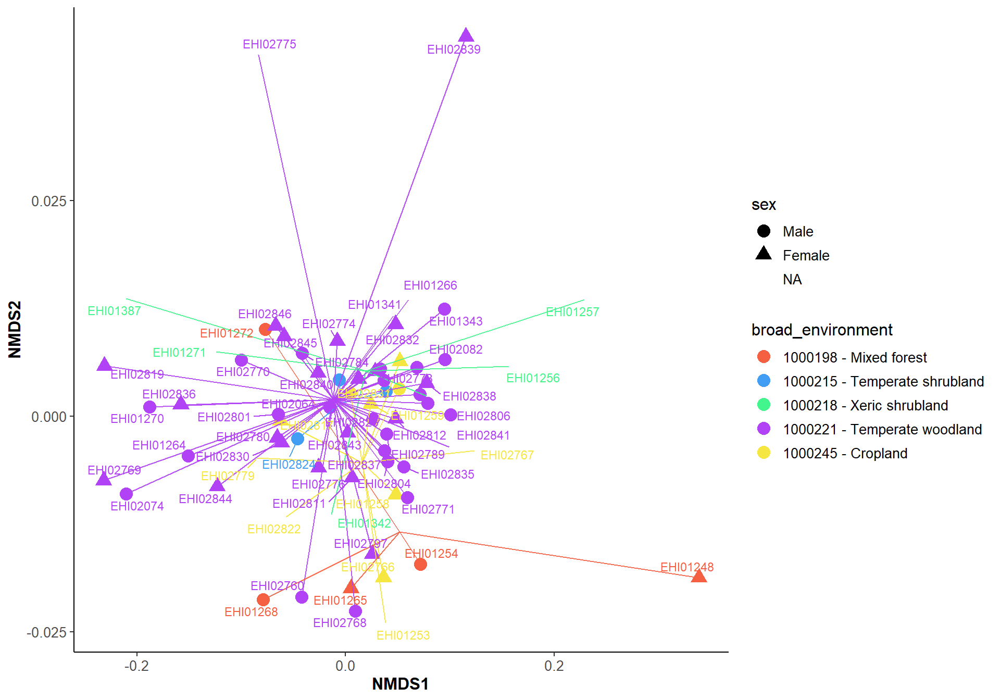
9 Gut microbiota: Differential abundance analysis
10 Gut microbiota: functional analysis
10.1 MCI
GIFTs_functions_community %>%
rowMeans() %>%
as_tibble(., rownames = "sample") %>%
left_join(sample_metadata, by = join_by(sample == sample)) %>%
# filter(time_point=="0_Wild") %>%
group_by(sex) %>%
summarise(MCI = mean(value), sd = sd(value))## # A tibble: 3 × 3
## sex MCI sd
## <fct> <dbl> <dbl>
## 1 Male 0.170 0.0141
## 2 Female 0.158 0.0199
## 3 <NA> NaN NAMCI <- GIFTs_functions_community %>%
rowMeans() %>%
as_tibble(., rownames = "sample") %>%
left_join(sample_metadata, by = join_by(sample == sample))
# %>%
# filter(diet!="Post_grass")
shapiro.test(MCI$value)##
## Shapiro-Wilk normality test
##
## data: MCI$value
## W = 0.98643, p-value = 0.6341##
## Wilcoxon rank sum exact test
##
## data: value by sex
## W = 587, p-value = 0.008114
## alternative hypothesis: true location shift is not equal to 0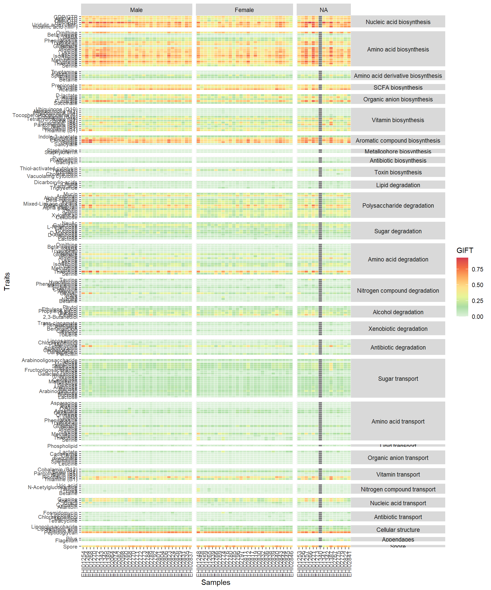 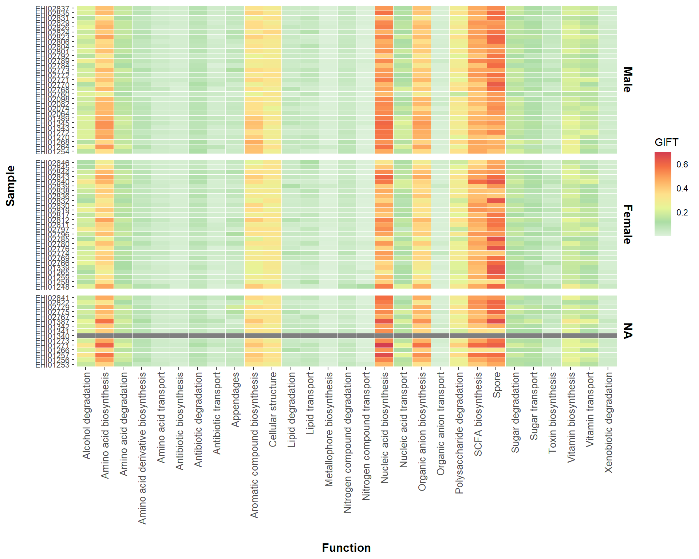
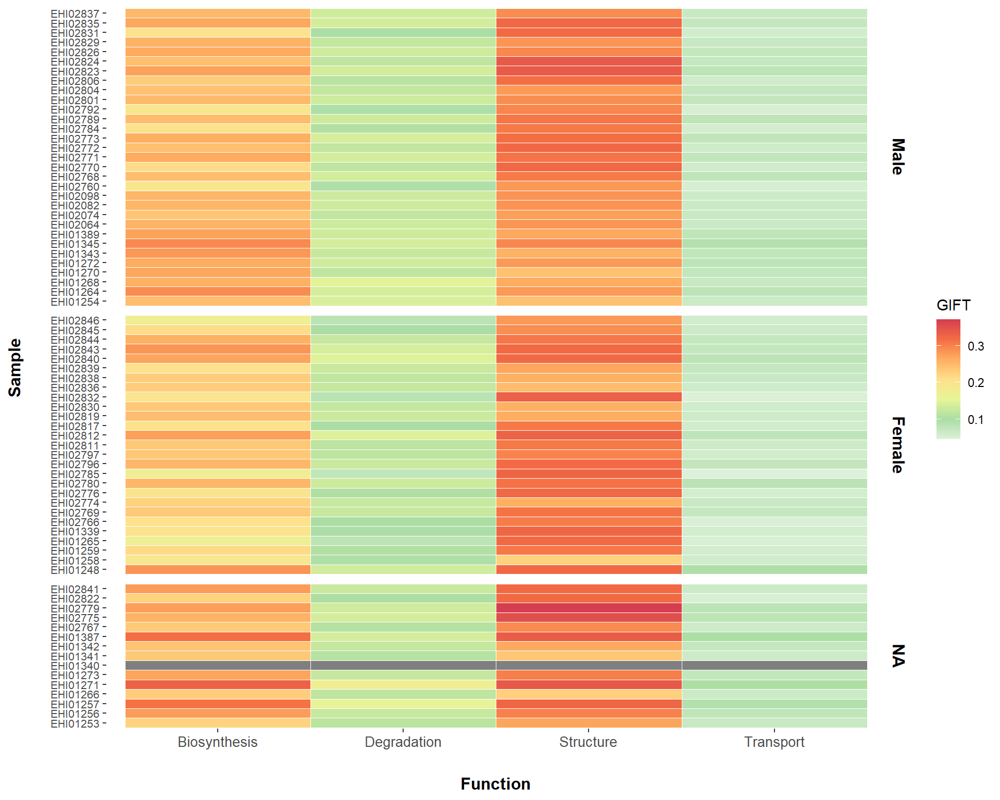
10.2 Wilcoxon
10.2.1 Community elements differences:
difference_table %>%
ggplot(aes(x=forcats::fct_reorder(Function,Difference), y=Difference, fill=group_color)) +
geom_col() +
# geom_point(size=4) +
scale_fill_manual(values=treatment_colors) +
geom_hline(yintercept=0) +
coord_flip()+
theme(axis.text = element_text(size = 10),
axis.title = element_text(size = 12),
legend.position = "right",
panel.background = element_blank(),
panel.grid.major = element_line(size = 0.15, linetype = 'solid',
colour = "grey"))+
xlab("Microbial Functional Capacity") +
ylab("Mean difference")+
labs(fill="Elevation")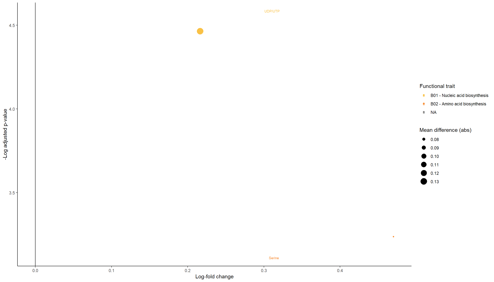
10.2.2 Community functions differences
function_gift <- GIFTs_functions_community %>%
as.data.frame() %>%
rownames_to_column(., "sample") %>%
merge(., sample_metadata %>% select(sample,sex,broad_environment), by="sample")unique_funct_db<- GIFT_db[c(3,4,5)] %>%
distinct(Code_function, .keep_all = TRUE)
significant_functional <- function_gift %>%
pivot_longer(-c(sample,sex,broad_environment), names_to = "trait", values_to = "value") %>%
group_by(trait) %>%
summarise(p_value = wilcox.test(value ~ sex)$p.value) %>%
mutate(p_adjust=p.adjust(p_value, method="BH")) %>%
filter(p_adjust < 0.05)%>%
left_join(.,unique_funct_db[c(1,3)],by = join_by(trait == Code_function))function_gift_t <- function_gift %>%
select(-sex) %>%
t() %>%
row_to_names(row_number = 1) %>%
as.data.frame() %>%
mutate_if(is.character, as.numeric) %>%
rownames_to_column(., "trait")
function_gift_filt <- subset(function_gift_t, trait %in% significant_functional$trait) %>%
t() %>%
row_to_names(row_number = 1) %>%
as.data.frame() %>%
mutate_if(is.character, as.numeric) %>%
rownames_to_column(., "sample")%>%
left_join(., sample_metadata %>% select(sample,sex,broad_environment), by = join_by(sample == sample)) %>%
filter(!is.na(sex))
function_gift_filt %>%
select(-c(sample,broad_environment)) %>%
group_by(sex) %>%
summarise(across(everything(), mean))%>%
t() %>%
row_to_names(row_number = 1) %>%
as.data.frame() %>%
mutate_if(is.character, as.numeric) %>%
rownames_to_column(., "Code_function") %>%
left_join(unique_funct_db[c(1,3)],by = join_by(Code_function == Code_function))function_gift_names <- function_gift_filt%>%
select(-c(sex,broad_environment)) %>%
t() %>%
row_to_names(row_number = 1) %>%
as.data.frame() %>%
mutate_if(is.character, as.numeric) %>%
rownames_to_column(., "Code_function") %>%
left_join(.,unique_funct_db[c(1,3)],by = join_by(Code_function == Code_function))%>%
select(-Code_function)%>%
select(Function, everything())%>%
t()%>%
row_to_names(row_number = 1) %>%
as.data.frame() %>%
mutate_if(is.character, as.numeric) %>%
rownames_to_column(., "sample")%>%
left_join(sample_metadata %>% select(sample,sex,broad_environment), by = join_by(sample == sample))
colNames <- names(function_gift_names)[2]
for(i in colNames){
plt <- ggplot(function_gift_names, aes(x=sex, y=.data[[i]], color = sex, fill=sex)) +
geom_boxplot(alpha = 0.2, outlier.shape = NA, width = 0.3, show.legend = FALSE) +
geom_jitter(width = 0.1, show.legend = TRUE) +
scale_color_manual(values=treatment_colors)+
scale_fill_manual(values=treatment_colors)+
theme_minimal() +
theme(
axis.line = element_line(size = 0.5, linetype = "solid", colour = "black"),
panel.grid.major = element_blank(),
panel.grid.minor = element_blank(),
panel.border = element_blank())
print(plt)
}10.2.3 Community domains differences
domain_gift <- GIFTs_domains_community %>%
as.data.frame() %>%
rownames_to_column(., "sample") %>%
merge(sample_metadata %>% select(sample,sex,broad_environment), by="sample")unique_domain_db<- GIFT_db[c(4)] %>%
distinct(Domain, .keep_all = TRUE)
significant_domain <- domain_gift %>%
pivot_longer(-c(sample,sex,broad_environment), names_to = "trait", values_to = "value") %>%
group_by(trait) %>%
summarise(p_value = wilcox.test(value ~ sex)$p.value) %>%
mutate(p_adjust=p.adjust(p_value, method="BH")) %>%
filter(p_adjust < 0.05)